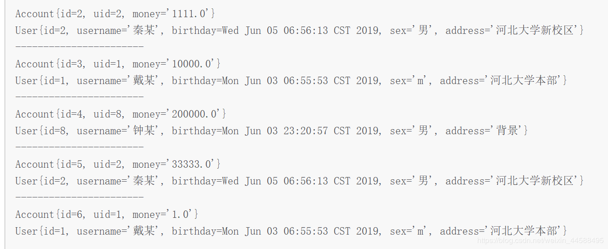
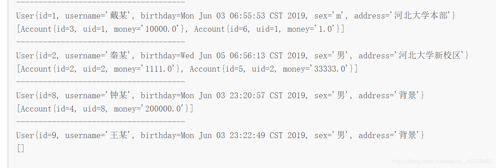

<!DOCTYPE html>
<html>
<head><meta name="generator" content="Hexo 3.9.0">
  <meta charset="utf-8">
  
  <!-- Mybatis基础 | Zesystem&#39;blog -->
  <title>Zesystem's  Space</title>
  <meta name="viewport" content="width=device-width, initial-scale=1, maximum-scale=1">
  <meta name="keywords" content="This is Zesystem's blog.">
  <!-- 
  
    <meta name="keywords" content="MinHow,MinHow's Blog" />
    -->
  <meta name="description" content="复习了一下mybatis的知识点，篇幅可能有一些长。里面有关于mybatis的配置文件、resultMap标签、多表查询、一对一、一对多、对多一、延迟加载、缓存的知识点。">
<meta name="keywords" content="Mybatis,基础知识">
<meta property="og:type" content="article">
<meta property="og:title" content="Mybatis基础">
<meta property="og:url" content="https://zesystem.github.io/2019/08/04/Mybatis基础/index.html">
<meta property="og:site_name" content="Zesystem&#39;blog">
<meta property="og:description" content="复习了一下mybatis的知识点，篇幅可能有一些长。里面有关于mybatis的配置文件、resultMap标签、多表查询、一对一、一对多、对多一、延迟加载、缓存的知识点。">
<meta property="og:locale" content="default">
<meta property="og:image" content="https://zesystem.github.io/2019/08/04/Mybatis基础/20190612161644725.png">
<meta property="og:image" content="https://zesystem.github.io/2019/08/04/Mybatis基础/20190612161706446.png">
<meta property="og:image" content="https://zesystem.github.io/2019/08/04/Mybatis基础/20190612162810793.png">
<meta property="og:image" content="https://zesystem.github.io/2019/08/04/Mybatis基础/20190612161644725.png">
<meta property="og:image" content="https://zesystem.github.io/2019/08/04/Mybatis基础/20190612165536670.png">
<meta property="og:image" content="https://zesystem.github.io/2019/08/04/Mybatis基础/20190612170119610.png">
<meta property="og:image" content="https://zesystem.github.io/2019/08/04/Mybatis基础/20190612180802788.png">
<meta property="og:image" content="https://zesystem.github.io/2019/08/04/Mybatis基础/2019061218082049.png">
<meta property="og:image" content="https://zesystem.github.io/2019/08/04/Mybatis基础/2019061218083497.png">
<meta property="og:image" content="https://zesystem.github.io/2019/08/04/Mybatis基础/20190612181611350.png">
<meta property="og:image" content="https://zesystem.github.io/2019/08/04/Mybatis基础/20190612181806603.png">
<meta property="og:image" content="https://zesystem.github.io/2019/08/04/Mybatis基础/20190612181944209.png">
<meta property="og:image" content="https://zesystem.github.io/2019/08/04/Mybatis基础/20190613114155874.png">
<meta property="og:image" content="https://zesystem.github.io/2019/08/04/Mybatis基础/20190613120432648.png">
<meta property="og:image" content="https://zesystem.github.io/2019/08/04/Mybatis基础/20190613120516118.png">
<meta property="og:image" content="https://zesystem.github.io/2019/08/04/Mybatis基础/20190613120124398.png">
<meta property="og:image" content="https://zesystem.github.io/2019/08/04/Mybatis基础/20190613120156529.png">
<meta property="og:image" content="https://zesystem.github.io/2019/08/04/Mybatis基础/20190613123341184.png">
<meta property="og:image" content="https://zesystem.github.io/2019/08/04/Mybatis基础/20190613123532572.png">
<meta property="og:image" content="https://zesystem.github.io/2019/08/04/Mybatis基础/20190613123814760.png">
<meta property="og:image" content="https://zesystem.github.io/2019/08/04/Mybatis基础/20190613124715389.png">
<meta property="og:image" content="https://zesystem.github.io/2019/08/04/Mybatis基础/20190613130500371.png">
<meta property="og:updated_time" content="2019-08-04T14:21:50.020Z">
<meta name="twitter:card" content="summary">
<meta name="twitter:title" content="Mybatis基础">
<meta name="twitter:description" content="复习了一下mybatis的知识点，篇幅可能有一些长。里面有关于mybatis的配置文件、resultMap标签、多表查询、一对一、一对多、对多一、延迟加载、缓存的知识点。">
<meta name="twitter:image" content="https://zesystem.github.io/2019/08/04/Mybatis基础/20190612161644725.png">
  
  
    <link rel="icon" href="/favicon.ico">
  
  <link href="//cdn.bootcss.com/font-awesome/4.7.0/css/font-awesome.min.css" rel="stylesheet" type="text/css">
  <link rel="stylesheet" href="/css/style.css">
  <script src="/js/pace.min.js"></script>
  

  
	<script>
	var _hmt = _hmt || [];
	(function() {
	  var hm = document.createElement("script");
	  hm.src = "//hm.baidu.com/hm.js?true";
	  var s = document.getElementsByTagName("script")[0]; 
	  s.parentNode.insertBefore(hm, s);
	})();
	</script>

  
  <div style="display: none;">
    <script src="//s22.cnzz.com/z_stat.php?id=true&web_id=true" language="JavaScript"></script>
  </div>


</head>
</html>
<body>
  <div id="container">
      <header id="header">
    <div id="banner"></div>
    <div id="header-outer">
        <div id="header-menu" class="header-menu-pos animated">
            <div class="header-menu-container">
                <a href="/" class="left">
                    <span class="site-title">Zesystem</span>
                </a>
                <nav id="header-menu-nav" class="right">
                    
                    <a  href="/">
                        <i class="fa fa-home"></i>
                        <span>我的家</span>
                    </a>
                    
                    <a  href="/archives">
                        <i class="fa fa-archive"></i>
                        <span>干货s</span>
                    </a>
                    
                    <a  href="/about">
                        <i class="fa fa-user"></i>
                        <span>关于me</span>
                    </a>
                    
                </nav>
                <a class="mobile-header-menu-button">
                    <i class="fa fa-bars"></i>
                </a>
            </div>
        </div>
        <div id="header-row">
            <div id="logo">
                <a href="/">
                    
                </a>
            </div>
            <div class="header-info">
                <div id="header-title">
                    
                    <h2>
                        Zesystem
                    </h2>
                    
                </div>
                <div id="header-description">
                    
                    <h3>
                        不平凡的人生需要走不平凡的路
                    </h3>
                    
                </div>
            </div>
            <nav class="header-nav">
                <div class="social">
                    
                        <a title="CSDN" target="_blank" href="https://blog.csdn.net/weixin_44588495">
                            <i class="fa fa-home fa-2x"></i></a>
                    
                        <a title="Github" target="_blank" href="https://github.com/Zesystem">
                            <i class="fa fa-github fa-2x"></i></a>
                    
                        <a title="2502266520"  ">
                            <i class="fa fa-qq fa-2x"></i></a>
                    
                </div>
            </nav>
        </div>
    </div>
</header>
      <div class="outer">
        <section id="main" class="body-wrap"><article id="post-Mybatis基础" class="article article-type-post" itemscope itemprop="blogPost">
  <div class="article-inner">
    
      <header class="article-header">
        
  
    <h1 class="post-title" itemprop="name">
      Mybatis基础
    </h1>
    <div class="post-title-bar">
      <ul>
          
              <li>
                  <i class="fa fa-book"></i>
                  
                      <a href="/categories/java框架/">java框架</a>
                  
              </li>
          
        <li>
          <i class="fa fa-calendar"></i>  2019-08-04
        </li>
        <li>
          <i class="fa fa-eye"></i>
          <span id="busuanzi_value_page_pv"></span>
        </li>
      </ul>
    </div>
  

          
      </header>
    
    <div class="article-entry post-content" itemprop="articleBody">
      
            
            <p>复习了一下mybatis的知识点，篇幅可能有一些长。里面有关于mybatis的配置文件、resultMap标签、多表查询、一对一、一对多、对多一、延迟加载、缓存的知识点。</p>
<a id="more"></a>
<h3 id="1、一个简单的Mybatis程序"><a href="#1、一个简单的Mybatis程序" class="headerlink" title="1、一个简单的Mybatis程序"></a>1、一个简单的Mybatis程序</h3><h4 id="首先先看dao层的IUserDao"><a href="#首先先看dao层的IUserDao" class="headerlink" title="首先先看dao层的IUserDao"></a>首先先看dao层的IUserDao</h4><ul>
<li>该层是持久层。里面有一个接口，用于查询存在一些查询的方法。<figure class="highlight java"><table><tr><td class="gutter"><pre><span class="line">1</span><br><span class="line">2</span><br><span class="line">3</span><br><span class="line">4</span><br><span class="line">5</span><br><span class="line">6</span><br></pre></td><td class="code"><pre><span class="line"><span class="keyword">package</span> com.mybatis.dao;</span><br><span class="line"><span class="keyword">import</span> com.mybatis.domain.User;</span><br><span class="line"><span class="keyword">import</span> java.util.List;</span><br><span class="line"><span class="keyword">public</span> <span class="class"><span class="keyword">interface</span> <span class="title">IUserDao</span> </span>&#123;</span><br><span class="line">    <span class="function">List&lt;User&gt; <span class="title">findAll</span><span class="params">()</span></span>;</span><br><span class="line">&#125;</span><br></pre></td></tr></table></figure>

</li>
</ul>
<h4 id="再看domain层的User"><a href="#再看domain层的User" class="headerlink" title="再看domain层的User"></a>再看domain层的User</h4><ul>
<li>这里面是一个类，这个类用于存放与数据库表对应的属性，也就是咱们说的ORM ，对象关系映射</li>
</ul>
<figure class="highlight java"><table><tr><td class="gutter"><pre><span class="line">1</span><br><span class="line">2</span><br><span class="line">3</span><br><span class="line">4</span><br><span class="line">5</span><br><span class="line">6</span><br><span class="line">7</span><br><span class="line">8</span><br><span class="line">9</span><br><span class="line">10</span><br><span class="line">11</span><br></pre></td><td class="code"><pre><span class="line"><span class="keyword">package</span> com.mybatis.domain;</span><br><span class="line"><span class="keyword">import</span> java.io.Serializable;</span><br><span class="line"><span class="keyword">import</span> java.util.Date;</span><br><span class="line"><span class="keyword">public</span> <span class="class"><span class="keyword">class</span> <span class="title">User</span> <span class="keyword">implements</span> <span class="title">Serializable</span> </span>&#123;</span><br><span class="line">    <span class="keyword">private</span> Integer id;</span><br><span class="line">    <span class="keyword">private</span> String username;</span><br><span class="line">    <span class="keyword">private</span> Date birthday;</span><br><span class="line">    <span class="keyword">private</span> String sex;</span><br><span class="line">    <span class="keyword">private</span> String address;</span><br><span class="line">    <span class="comment">//省略get、set和toString方法</span></span><br><span class="line">&#125;</span><br></pre></td></tr></table></figure>

<h4 id="接着看resources层的SqlMapConfig-xml"><a href="#接着看resources层的SqlMapConfig-xml" class="headerlink" title="接着看resources层的SqlMapConfig.xml"></a>接着看resources层的SqlMapConfig.xml</h4><ul>
<li><p>这里是配置整个数据库的信息，这里面除了配置数据库的信息外，还要配置每一个dao层执行sql语句的文件。</p>
<figure class="highlight xml"><table><tr><td class="gutter"><pre><span class="line">1</span><br><span class="line">2</span><br><span class="line">3</span><br><span class="line">4</span><br><span class="line">5</span><br><span class="line">6</span><br><span class="line">7</span><br><span class="line">8</span><br><span class="line">9</span><br><span class="line">10</span><br><span class="line">11</span><br><span class="line">12</span><br><span class="line">13</span><br><span class="line">14</span><br><span class="line">15</span><br><span class="line">16</span><br><span class="line">17</span><br><span class="line">18</span><br><span class="line">19</span><br><span class="line">20</span><br><span class="line">21</span><br><span class="line">22</span><br><span class="line">23</span><br><span class="line">24</span><br><span class="line">25</span><br><span class="line">26</span><br><span class="line">27</span><br></pre></td><td class="code"><pre><span class="line"><span class="meta">&lt;?xml version="1.0" encoding="UTF-8" ?&gt;</span></span><br><span class="line"><span class="meta">&lt;!DOCTYPE configuration</span></span><br><span class="line"><span class="meta">        PUBLIC "-//mybatis.org//DTD Config 3.0//EN"</span></span><br><span class="line"><span class="meta">        "http://mybatis.org/dtd/mybatis-3-config.dtd"&gt;</span></span><br><span class="line"><span class="comment">&lt;!--mybatis主配置文件--&gt;</span></span><br><span class="line"><span class="tag">&lt;<span class="name">configuration</span>&gt;</span></span><br><span class="line">    <span class="comment">&lt;!--配置环境--&gt;</span></span><br><span class="line">    <span class="tag">&lt;<span class="name">environments</span> <span class="attr">default</span>=<span class="string">"mysql"</span>&gt;</span></span><br><span class="line"><span class="comment">&lt;!--        配置mysql环境--&gt;</span></span><br><span class="line">        <span class="tag">&lt;<span class="name">environment</span> <span class="attr">id</span>=<span class="string">"mysql"</span>&gt;</span></span><br><span class="line"><span class="comment">&lt;!--            配置事务类型--&gt;</span></span><br><span class="line">            <span class="tag">&lt;<span class="name">transactionManager</span> <span class="attr">type</span>=<span class="string">"JDBC"</span>&gt;</span><span class="tag">&lt;/<span class="name">transactionManager</span>&gt;</span></span><br><span class="line"><span class="comment">&lt;!--            配置数据源（连接池）--&gt;</span></span><br><span class="line">            <span class="tag">&lt;<span class="name">dataSource</span> <span class="attr">type</span>=<span class="string">"POOLED"</span>&gt;</span></span><br><span class="line"><span class="comment">&lt;!--                配置数据库的基本信息--&gt;</span></span><br><span class="line">                <span class="tag">&lt;<span class="name">property</span> <span class="attr">name</span>=<span class="string">"driver"</span> <span class="attr">value</span>=<span class="string">"com.mysql.jdbc.Driver"</span>/&gt;</span></span><br><span class="line">                <span class="tag">&lt;<span class="name">property</span> <span class="attr">name</span>=<span class="string">"url"</span> <span class="attr">value</span>=<span class="string">"jdbc:mysql://localhost:3306/mybatis?serverTimezone=GMT"</span>/&gt;</span></span><br><span class="line">                <span class="tag">&lt;<span class="name">property</span> <span class="attr">name</span>=<span class="string">"username"</span> <span class="attr">value</span>=<span class="string">"root"</span>/&gt;</span></span><br><span class="line">                <span class="tag">&lt;<span class="name">property</span> <span class="attr">name</span>=<span class="string">"password"</span> <span class="attr">value</span>=<span class="string">"111111"</span>/&gt;</span></span><br><span class="line">            <span class="tag">&lt;/<span class="name">dataSource</span>&gt;</span></span><br><span class="line">        <span class="tag">&lt;/<span class="name">environment</span>&gt;</span></span><br><span class="line">    <span class="tag">&lt;/<span class="name">environments</span>&gt;</span></span><br><span class="line"><span class="comment">&lt;!--    指定映射配置文件的位置，映射配置文件指的是每一个dao独立的配置文件--&gt;</span></span><br><span class="line">    <span class="tag">&lt;<span class="name">mappers</span>&gt;</span></span><br><span class="line">        <span class="tag">&lt;<span class="name">mapper</span> <span class="attr">resource</span>=<span class="string">"com/mybatis/dao/IUserDao.xml"</span>/&gt;</span></span><br><span class="line">    <span class="tag">&lt;/<span class="name">mappers</span>&gt;</span></span><br><span class="line"><span class="tag">&lt;/<span class="name">configuration</span>&gt;</span></span><br></pre></td></tr></table></figure>
</li>
<li><p>IUserDao.xml是具体配置哪个接口的配置文件</p>
<figure class="highlight xml"><table><tr><td class="gutter"><pre><span class="line">1</span><br><span class="line">2</span><br><span class="line">3</span><br><span class="line">4</span><br><span class="line">5</span><br><span class="line">6</span><br><span class="line">7</span><br><span class="line">8</span><br><span class="line">9</span><br></pre></td><td class="code"><pre><span class="line"><span class="meta">&lt;?xml version="1.0" encoding="UTF-8" ?&gt;</span></span><br><span class="line"><span class="meta">&lt;!DOCTYPE mapper</span></span><br><span class="line"><span class="meta">        PUBLIC "-//mybatis.org//DTD Mapper 3.0//EN"</span></span><br><span class="line"><span class="meta">        "http://mybatis.org/dtd/mybatis-3-mapper.dtd"&gt;</span></span><br><span class="line"><span class="tag">&lt;<span class="name">mapper</span> <span class="attr">namespace</span>=<span class="string">"com.mybatis.dao.IUserDao"</span>&gt;</span></span><br><span class="line">    <span class="tag">&lt;<span class="name">select</span> <span class="attr">id</span>=<span class="string">"findAll"</span> <span class="attr">resultType</span>=<span class="string">"com.mybatis.domain.User"</span>&gt;</span></span><br><span class="line">        select * from  users</span><br><span class="line">    <span class="tag">&lt;/<span class="name">select</span>&gt;</span></span><br><span class="line"><span class="tag">&lt;/<span class="name">mapper</span>&gt;</span></span><br></pre></td></tr></table></figure>

</li>
</ul>
<h4 id="测试类"><a href="#测试类" class="headerlink" title="测试类"></a>测试类</h4><figure class="highlight java"><table><tr><td class="gutter"><pre><span class="line">1</span><br><span class="line">2</span><br><span class="line">3</span><br><span class="line">4</span><br><span class="line">5</span><br><span class="line">6</span><br><span class="line">7</span><br><span class="line">8</span><br><span class="line">9</span><br><span class="line">10</span><br><span class="line">11</span><br><span class="line">12</span><br><span class="line">13</span><br><span class="line">14</span><br><span class="line">15</span><br><span class="line">16</span><br><span class="line">17</span><br><span class="line">18</span><br><span class="line">19</span><br><span class="line">20</span><br></pre></td><td class="code"><pre><span class="line"><span class="keyword">public</span> <span class="class"><span class="keyword">class</span> <span class="title">MybatisTest</span> </span>&#123;</span><br><span class="line">    <span class="function"><span class="keyword">public</span> <span class="keyword">static</span> <span class="keyword">void</span> <span class="title">main</span><span class="params">(String[] args)</span><span class="keyword">throws</span> Exception </span>&#123;</span><br><span class="line"><span class="comment">//        1、读取配置文件</span></span><br><span class="line">        InputStream in = Resources.getResourceAsStream(<span class="string">"SqlMapConfig.xml"</span>);</span><br><span class="line"><span class="comment">//        2、创建SqlSessionFactory工厂</span></span><br><span class="line">        SqlSessionFactoryBuilder factoryBuilder = <span class="keyword">new</span> SqlSessionFactoryBuilder();</span><br><span class="line">        SqlSessionFactory factory = factoryBuilder.build(in);</span><br><span class="line"><span class="comment">//        3、使用工厂生产SqlSession对象</span></span><br><span class="line">        SqlSession session = factory.openSession();</span><br><span class="line"><span class="comment">//        4、使用SqlSession创建Dao接口的代理对象</span></span><br><span class="line">        IUserDao userDao = session.getMapper(IUserDao.class);</span><br><span class="line"><span class="comment">//        5、使用代理对象执行方法</span></span><br><span class="line">        List&lt;User&gt; users = userDao.findAll();</span><br><span class="line">        <span class="keyword">for</span> (User user:users)&#123;</span><br><span class="line">            System.out.println(user);</span><br><span class="line">        &#125;</span><br><span class="line"><span class="comment">//        6、释放资源</span></span><br><span class="line">        session.close();</span><br><span class="line">    &#125;</span><br><span class="line">&#125;</span><br></pre></td></tr></table></figure>

<h3 id="2、Mybatis中resultMap标签和sql标签的设置"><a href="#2、Mybatis中resultMap标签和sql标签的设置" class="headerlink" title="2、Mybatis中resultMap标签和sql标签的设置"></a>2、Mybatis中resultMap标签和sql标签的设置</h3><ul>
<li>IUserDao.xml<br>其中的mapper标签中的namespace属性指的就是持久层中的接口，这里的sql语句都是对应这个接口中的方法，也就是指定了命名空间。在这里resultMap标签是查询结果的列名和实体类的属性名的对应关系，也就是说我们类中的属性名不一定和数据库中的保持一致，其中property配置的就是类中的属性名，column设置的就是数据库中表的字段名。在sql语句的标签中之前的，resultType变成了resultMap。sql标签中直接写的是就是sql语句，这个可以有效的避免重复的写sql相同代码，如果要引用sql标签中内容，在对应的语句中需要引用Include标签，具体的可以看下面的代码。</li>
</ul>
<figure class="highlight xml"><table><tr><td class="gutter"><pre><span class="line">1</span><br><span class="line">2</span><br><span class="line">3</span><br><span class="line">4</span><br><span class="line">5</span><br><span class="line">6</span><br><span class="line">7</span><br><span class="line">8</span><br><span class="line">9</span><br><span class="line">10</span><br><span class="line">11</span><br><span class="line">12</span><br><span class="line">13</span><br><span class="line">14</span><br><span class="line">15</span><br><span class="line">16</span><br><span class="line">17</span><br><span class="line">18</span><br><span class="line">19</span><br><span class="line">20</span><br><span class="line">21</span><br><span class="line">22</span><br><span class="line">23</span><br><span class="line">24</span><br><span class="line">25</span><br><span class="line">26</span><br></pre></td><td class="code"><pre><span class="line"><span class="meta">&lt;?xml version="1.0" encoding="UTF-8" ?&gt;</span></span><br><span class="line"><span class="meta">&lt;!DOCTYPE mapper</span></span><br><span class="line"><span class="meta">        PUBLIC "-//mybatis.org//DTD Mapper 3.0//EN"</span></span><br><span class="line"><span class="meta">        "http://mybatis.org/dtd/mybatis-3-mapper.dtd"&gt;</span></span><br><span class="line"><span class="tag">&lt;<span class="name">mapper</span> <span class="attr">namespace</span>=<span class="string">"com.mybatis.dao.IUserDao"</span>&gt;</span></span><br><span class="line"><span class="comment">&lt;!--    配置，查询结果的列名和实体类的属性名的对应关系--&gt;</span></span><br><span class="line">    <span class="tag">&lt;<span class="name">resultMap</span> <span class="attr">id</span>=<span class="string">"userMap"</span> <span class="attr">type</span>=<span class="string">"com.mybatis.domain.User"</span>&gt;</span></span><br><span class="line"><span class="comment">&lt;!--        主键字段对应--&gt;</span></span><br><span class="line">        <span class="tag">&lt;<span class="name">id</span> <span class="attr">property</span>=<span class="string">"userId"</span> <span class="attr">column</span>=<span class="string">"id"</span>&gt;</span><span class="tag">&lt;/<span class="name">id</span>&gt;</span></span><br><span class="line"><span class="comment">&lt;!--        非主键字段对应--&gt;</span></span><br><span class="line">        <span class="tag">&lt;<span class="name">result</span> <span class="attr">property</span>=<span class="string">"userName"</span> <span class="attr">column</span>=<span class="string">"username"</span>&gt;</span><span class="tag">&lt;/<span class="name">result</span>&gt;</span></span><br><span class="line">        <span class="tag">&lt;<span class="name">result</span> <span class="attr">property</span>=<span class="string">"userAddress"</span> <span class="attr">column</span>=<span class="string">"address"</span>&gt;</span><span class="tag">&lt;/<span class="name">result</span>&gt;</span></span><br><span class="line">        <span class="tag">&lt;<span class="name">result</span> <span class="attr">property</span>=<span class="string">"userSex"</span> <span class="attr">column</span>=<span class="string">"sex"</span>&gt;</span><span class="tag">&lt;/<span class="name">result</span>&gt;</span></span><br><span class="line">        <span class="tag">&lt;<span class="name">result</span> <span class="attr">property</span>=<span class="string">"userBirthday"</span> <span class="attr">column</span>=<span class="string">"birthday"</span>&gt;</span><span class="tag">&lt;/<span class="name">result</span>&gt;</span></span><br><span class="line">    <span class="tag">&lt;/<span class="name">resultMap</span>&gt;</span></span><br><span class="line">    <span class="tag">&lt;<span class="name">sql</span> <span class="attr">id</span>=<span class="string">"defaultUser"</span>&gt;</span></span><br><span class="line">        select * from users</span><br><span class="line">    <span class="tag">&lt;/<span class="name">sql</span>&gt;</span></span><br><span class="line"><span class="comment">&lt;!--    查询所有--&gt;</span></span><br><span class="line">    <span class="tag">&lt;<span class="name">select</span> <span class="attr">id</span>=<span class="string">"findAll"</span> <span class="attr">resultMap</span>=<span class="string">"userMap"</span>&gt;</span></span><br><span class="line">        <span class="tag">&lt;<span class="name">include</span> <span class="attr">refid</span>=<span class="string">"defaultUser"</span>&gt;</span><span class="tag">&lt;/<span class="name">include</span>&gt;</span></span><br><span class="line">    <span class="tag">&lt;/<span class="name">select</span>&gt;</span></span><br><span class="line">    <span class="tag">&lt;<span class="name">select</span> <span class="attr">id</span>=<span class="string">"findById"</span> <span class="attr">parameterType</span>=<span class="string">"INT"</span> <span class="attr">resultMap</span>=<span class="string">"userMap"</span>&gt;</span></span><br><span class="line">        select * from users where id = #&#123;uid&#125;</span><br><span class="line">    <span class="tag">&lt;/<span class="name">select</span>&gt;</span></span><br><span class="line"><span class="tag">&lt;/<span class="name">mapper</span>&gt;</span></span><br></pre></td></tr></table></figure>

<h3 id="3、Mybatis的CRUD"><a href="#3、Mybatis的CRUD" class="headerlink" title="3、Mybatis的CRUD"></a>3、Mybatis的CRUD</h3><ul>
<li>IUserDao.xml配置文件如下：</li>
<li>这里的数据库表的字段和类的属性名称要一样，否则不能识别，如果想要改名字，可以用resultMap 。<figure class="highlight xml"><table><tr><td class="gutter"><pre><span class="line">1</span><br><span class="line">2</span><br><span class="line">3</span><br><span class="line">4</span><br><span class="line">5</span><br><span class="line">6</span><br><span class="line">7</span><br><span class="line">8</span><br><span class="line">9</span><br><span class="line">10</span><br><span class="line">11</span><br><span class="line">12</span><br><span class="line">13</span><br><span class="line">14</span><br><span class="line">15</span><br><span class="line">16</span><br><span class="line">17</span><br><span class="line">18</span><br><span class="line">19</span><br><span class="line">20</span><br><span class="line">21</span><br><span class="line">22</span><br><span class="line">23</span><br><span class="line">24</span><br><span class="line">25</span><br><span class="line">26</span><br></pre></td><td class="code"><pre><span class="line"><span class="meta">&lt;?xml version="1.0" encoding="UTF-8" ?&gt;</span></span><br><span class="line"><span class="meta">&lt;!DOCTYPE mapper</span></span><br><span class="line"><span class="meta">        PUBLIC "-//mybatis.org//DTD Mapper 3.0//EN"</span></span><br><span class="line"><span class="meta">        "http://mybatis.org/dtd/mybatis-3-mapper.dtd"&gt;</span></span><br><span class="line"><span class="tag">&lt;<span class="name">mapper</span> <span class="attr">namespace</span>=<span class="string">"com.mybatis.dao.IUserDao"</span>&gt;</span></span><br><span class="line">    <span class="comment">&lt;!--&lt;resultMap id="" type=""&gt;</span></span><br><span class="line"><span class="comment">        &lt;id property="" column=""&gt;&lt;/id&gt;</span></span><br><span class="line"><span class="comment">        &lt;result property="" column=""&gt;&lt;/result&gt;</span></span><br><span class="line"><span class="comment">    &lt;/resultMap&gt;--&gt;</span></span><br><span class="line"><span class="comment">&lt;!--    查询所有--&gt;</span></span><br><span class="line">    <span class="tag">&lt;<span class="name">select</span> <span class="attr">id</span>=<span class="string">"findAll"</span> <span class="attr">resultType</span>=<span class="string">"com.mybatis.domain.User"</span>&gt;</span></span><br><span class="line">        select * from  users</span><br><span class="line">    <span class="tag">&lt;/<span class="name">select</span>&gt;</span></span><br><span class="line"><span class="comment">&lt;!--    保存用户--&gt;</span></span><br><span class="line">    <span class="tag">&lt;<span class="name">insert</span> <span class="attr">id</span>=<span class="string">"saveUser"</span> <span class="attr">parameterType</span>=<span class="string">"com.mybatis.domain.User"</span> &gt;</span></span><br><span class="line">        insert into users(username,address,sex,birthday)values (#&#123;username&#125;,#&#123;address&#125;,#&#123;sex&#125;,#&#123;birthday&#125;);</span><br><span class="line">    <span class="tag">&lt;/<span class="name">insert</span>&gt;</span></span><br><span class="line"><span class="comment">&lt;!--    更新用户--&gt;</span></span><br><span class="line">    <span class="tag">&lt;<span class="name">update</span> <span class="attr">id</span>=<span class="string">"updateUserById"</span> <span class="attr">parameterType</span>=<span class="string">"com.mybatis.domain.User"</span>&gt;</span></span><br><span class="line">        update users set username=#&#123;username&#125;,address=#&#123;address&#125;,sex=#&#123;sex&#125;,birthday=#&#123;birthday&#125; where id=#&#123;id&#125;;</span><br><span class="line">    <span class="tag">&lt;/<span class="name">update</span>&gt;</span></span><br><span class="line"><span class="comment">&lt;!--    删除用户--&gt;</span></span><br><span class="line">    <span class="tag">&lt;<span class="name">delete</span> <span class="attr">id</span>=<span class="string">"deleteUserById"</span> <span class="attr">parameterType</span>=<span class="string">"java.lang.Integer"</span>&gt;</span></span><br><span class="line">        delete from users where id=#&#123;id&#125;;</span><br><span class="line">    <span class="tag">&lt;/<span class="name">delete</span>&gt;</span></span><br><span class="line"><span class="tag">&lt;/<span class="name">mapper</span>&gt;</span></span><br></pre></td></tr></table></figure>

</li>
</ul>
<h3 id="4、Mybatis的模糊查询以及其它操作"><a href="#4、Mybatis的模糊查询以及其它操作" class="headerlink" title="4、Mybatis的模糊查询以及其它操作"></a>4、Mybatis的模糊查询以及其它操作</h3><p>IUserDao.xml配置文件如下：</p>
<figure class="highlight xml"><table><tr><td class="gutter"><pre><span class="line">1</span><br><span class="line">2</span><br><span class="line">3</span><br><span class="line">4</span><br><span class="line">5</span><br><span class="line">6</span><br><span class="line">7</span><br><span class="line">8</span><br><span class="line">9</span><br><span class="line">10</span><br><span class="line">11</span><br><span class="line">12</span><br><span class="line">13</span><br><span class="line">14</span><br><span class="line">15</span><br><span class="line">16</span><br><span class="line">17</span><br><span class="line">18</span><br><span class="line">19</span><br><span class="line">20</span><br><span class="line">21</span><br><span class="line">22</span><br><span class="line">23</span><br></pre></td><td class="code"><pre><span class="line"><span class="meta">&lt;?xml version="1.0" encoding="UTF-8" ?&gt;</span></span><br><span class="line"><span class="meta">&lt;!DOCTYPE mapper</span></span><br><span class="line"><span class="meta">        PUBLIC "-//mybatis.org//DTD Mapper 3.0//EN"</span></span><br><span class="line"><span class="meta">        "http://mybatis.org/dtd/mybatis-3-mapper.dtd"&gt;</span></span><br><span class="line"><span class="tag">&lt;<span class="name">mapper</span> <span class="attr">namespace</span>=<span class="string">"com.mybatis.dao.IUserDao"</span>&gt;</span></span><br><span class="line"><span class="comment">&lt;!--    保存用户--&gt;</span></span><br><span class="line">    <span class="tag">&lt;<span class="name">insert</span> <span class="attr">id</span>=<span class="string">"saveUser"</span> <span class="attr">parameterType</span>=<span class="string">"com.mybatis.domain.User"</span> &gt;</span></span><br><span class="line">        <span class="comment">&lt;!--保存后返回id值--&gt;</span></span><br><span class="line">        <span class="tag">&lt;<span class="name">selectKey</span> <span class="attr">keyProperty</span>=<span class="string">"id"</span> <span class="attr">keyColumn</span>=<span class="string">"id"</span> <span class="attr">resultType</span>=<span class="string">"int"</span> <span class="attr">order</span>=<span class="string">"AFTER"</span>&gt;</span></span><br><span class="line">            select last_insert_id();</span><br><span class="line">        <span class="tag">&lt;/<span class="name">selectKey</span>&gt;</span></span><br><span class="line">        insert into users(username,address,sex,birthday)values (#&#123;username&#125;,#&#123;address&#125;,#&#123;sex&#125;,#&#123;birthday&#125;);</span><br><span class="line">    <span class="tag">&lt;/<span class="name">insert</span>&gt;</span></span><br><span class="line">    <span class="comment">&lt;!--    模糊查询--&gt;</span></span><br><span class="line">    <span class="tag">&lt;<span class="name">select</span> <span class="attr">id</span>=<span class="string">"findByName"</span> <span class="attr">parameterType</span>=<span class="string">"string"</span> <span class="attr">resultType</span>=<span class="string">"com.mybatis.domain.User"</span>&gt;</span></span><br><span class="line">        <span class="comment">&lt;!--select * from users where username like "%$&#123;value&#125;%";--&gt;</span></span><br><span class="line">        select * from users where username like #&#123;username&#125;;</span><br><span class="line">    <span class="tag">&lt;/<span class="name">select</span>&gt;</span></span><br><span class="line"><span class="comment">&lt;!--    查询总用户数--&gt;</span></span><br><span class="line">    <span class="tag">&lt;<span class="name">select</span> <span class="attr">id</span>=<span class="string">"findTotalUser"</span> <span class="attr">resultType</span>=<span class="string">"int"</span>&gt;</span></span><br><span class="line">        select count(id) from users;</span><br><span class="line">    <span class="tag">&lt;/<span class="name">select</span>&gt;</span></span><br><span class="line"><span class="tag">&lt;/<span class="name">mapper</span>&gt;</span></span><br></pre></td></tr></table></figure>

<h3 id="4、多表联合查询之一对一"><a href="#4、多表联合查询之一对一" class="headerlink" title="4、多表联合查询之一对一"></a>4、多表联合查询之一对一</h3><h4 id="数据库表"><a href="#数据库表" class="headerlink" title="数据库表"></a>数据库表</h4><ul>
<li>用户表users<br></li>
<li>账户表account，其中账户表的uid为外键，指向的是用户表的主键id<br><h4 id="我们首先来看两个实体类，对应着两张表"><a href="#我们首先来看两个实体类，对应着两张表" class="headerlink" title="我们首先来看两个实体类，对应着两张表"></a>我们首先来看两个实体类，对应着两张表</h4></li>
<li>User类</li>
</ul>
<figure class="highlight java"><table><tr><td class="gutter"><pre><span class="line">1</span><br><span class="line">2</span><br><span class="line">3</span><br><span class="line">4</span><br><span class="line">5</span><br><span class="line">6</span><br></pre></td><td class="code"><pre><span class="line"><span class="keyword">public</span> <span class="class"><span class="keyword">class</span> <span class="title">User</span> <span class="keyword">implements</span> <span class="title">Serializable</span> </span>&#123;</span><br><span class="line">    <span class="keyword">private</span> Integer id;</span><br><span class="line">    <span class="keyword">private</span> String username;</span><br><span class="line">    <span class="keyword">private</span> Date birthday;</span><br><span class="line">    <span class="keyword">private</span> String sex;</span><br><span class="line">    <span class="keyword">private</span> String address;</span><br></pre></td></tr></table></figure>

<ul>
<li>Account类：这里需要注意的是，在这里定义了一User的类。用于查询当前账户所属的用户信息。</li>
</ul>
<figure class="highlight java"><table><tr><td class="gutter"><pre><span class="line">1</span><br><span class="line">2</span><br><span class="line">3</span><br><span class="line">4</span><br><span class="line">5</span><br></pre></td><td class="code"><pre><span class="line"><span class="keyword">public</span> <span class="class"><span class="keyword">class</span> <span class="title">Account</span> <span class="keyword">implements</span> <span class="title">Serializable</span> </span>&#123;</span><br><span class="line">    <span class="keyword">private</span> Integer id;</span><br><span class="line">    <span class="keyword">private</span>  Integer uid;</span><br><span class="line">    <span class="keyword">private</span> String money;</span><br><span class="line">    <span class="keyword">private</span>  User user;</span><br></pre></td></tr></table></figure>

<h4 id="查看咱们的主要配置文件：IAccountDao-xml"><a href="#查看咱们的主要配置文件：IAccountDao-xml" class="headerlink" title="查看咱们的主要配置文件：IAccountDao.xml"></a>查看咱们的主要配置文件：IAccountDao.xml</h4><p>在之前的文章中提到过resultMap这个标签，但是对于多表查询我们还需要嵌套一个association标签。因为我们主要查询的是账户信息，其次是附带的用户信息，所以将用户信息放在association标签内。其中的property就是咱们在Account类中定义的属性。接着就是SQL语句select u.*,a.id as aid,a.uid,a.money from account a,users u where u.id = a.uid。我们首先将两张表分别取别名，然后条件是id与uid相等，之后我们先查询出用户的所有信息，然后查询出账户的信息，哪张表放在前面都行。</p>
<figure class="highlight xml"><table><tr><td class="gutter"><pre><span class="line">1</span><br><span class="line">2</span><br><span class="line">3</span><br><span class="line">4</span><br><span class="line">5</span><br><span class="line">6</span><br><span class="line">7</span><br><span class="line">8</span><br><span class="line">9</span><br><span class="line">10</span><br><span class="line">11</span><br><span class="line">12</span><br><span class="line">13</span><br><span class="line">14</span><br><span class="line">15</span><br><span class="line">16</span><br><span class="line">17</span><br><span class="line">18</span><br><span class="line">19</span><br><span class="line">20</span><br><span class="line">21</span><br><span class="line">22</span><br><span class="line">23</span><br><span class="line">24</span><br></pre></td><td class="code"><pre><span class="line"><span class="meta">&lt;?xml version="1.0" encoding="UTF-8" ?&gt;</span></span><br><span class="line"><span class="meta">&lt;!DOCTYPE mapper</span></span><br><span class="line"><span class="meta">        PUBLIC "-//mybatis.org//DTD Mapper 3.0//EN"</span></span><br><span class="line"><span class="meta">        "http://mybatis.org/dtd/mybatis-3-mapper.dtd"&gt;</span></span><br><span class="line"><span class="tag">&lt;<span class="name">mapper</span> <span class="attr">namespace</span>=<span class="string">"com.mybatis.dao.IAccountDao"</span>&gt;</span></span><br><span class="line"><span class="comment">&lt;!--    定义封装account和user的resultMap--&gt;</span></span><br><span class="line">    <span class="tag">&lt;<span class="name">resultMap</span> <span class="attr">id</span>=<span class="string">"accountUserMap"</span> <span class="attr">type</span>=<span class="string">"com.mybatis.domain.Account"</span>&gt;</span></span><br><span class="line">        <span class="tag">&lt;<span class="name">id</span> <span class="attr">property</span>=<span class="string">"id"</span> <span class="attr">column</span>=<span class="string">"aid"</span>&gt;</span><span class="tag">&lt;/<span class="name">id</span>&gt;</span></span><br><span class="line">        <span class="tag">&lt;<span class="name">result</span> <span class="attr">property</span>=<span class="string">"uid"</span> <span class="attr">column</span>=<span class="string">"uid"</span>&gt;</span><span class="tag">&lt;/<span class="name">result</span>&gt;</span></span><br><span class="line">        <span class="tag">&lt;<span class="name">result</span> <span class="attr">property</span>=<span class="string">"money"</span> <span class="attr">column</span>=<span class="string">"money"</span>&gt;</span><span class="tag">&lt;/<span class="name">result</span>&gt;</span></span><br><span class="line"><span class="comment">&lt;!--        一对一关系映射，配置封装user的内容--&gt;</span></span><br><span class="line">        <span class="tag">&lt;<span class="name">association</span> <span class="attr">property</span>=<span class="string">"user"</span> <span class="attr">column</span>=<span class="string">"uid"</span>&gt;</span></span><br><span class="line">            <span class="tag">&lt;<span class="name">id</span> <span class="attr">property</span>=<span class="string">"id"</span> <span class="attr">column</span>=<span class="string">"id"</span>&gt;</span><span class="tag">&lt;/<span class="name">id</span>&gt;</span></span><br><span class="line">            <span class="tag">&lt;<span class="name">result</span> <span class="attr">property</span>=<span class="string">"username"</span> <span class="attr">column</span>=<span class="string">"username"</span>&gt;</span><span class="tag">&lt;/<span class="name">result</span>&gt;</span></span><br><span class="line">            <span class="tag">&lt;<span class="name">result</span> <span class="attr">property</span>=<span class="string">"address"</span> <span class="attr">column</span>=<span class="string">"address"</span>&gt;</span><span class="tag">&lt;/<span class="name">result</span>&gt;</span></span><br><span class="line">            <span class="tag">&lt;<span class="name">result</span> <span class="attr">property</span>=<span class="string">"sex"</span> <span class="attr">column</span>=<span class="string">"sex"</span>&gt;</span><span class="tag">&lt;/<span class="name">result</span>&gt;</span></span><br><span class="line">            <span class="tag">&lt;<span class="name">result</span> <span class="attr">property</span>=<span class="string">"birthday"</span> <span class="attr">column</span>=<span class="string">"birthday"</span>&gt;</span><span class="tag">&lt;/<span class="name">result</span>&gt;</span></span><br><span class="line">        <span class="tag">&lt;/<span class="name">association</span>&gt;</span></span><br><span class="line">    <span class="tag">&lt;/<span class="name">resultMap</span>&gt;</span></span><br><span class="line"><span class="comment">&lt;!--    查询所有--&gt;</span></span><br><span class="line">    <span class="tag">&lt;<span class="name">select</span> <span class="attr">id</span>=<span class="string">"findAll"</span> <span class="attr">resultMap</span>=<span class="string">"accountUserMap"</span>&gt;</span></span><br><span class="line">        select u.*,a.id as aid,a.uid,a.money from account a,users u where u.id = a.uid</span><br><span class="line">    <span class="tag">&lt;/<span class="name">select</span>&gt;</span></span><br><span class="line"><span class="tag">&lt;/<span class="name">mapper</span>&gt;</span></span><br></pre></td></tr></table></figure>

<p></p>
<h3 id="5、多表联合查询之一对多"><a href="#5、多表联合查询之一对多" class="headerlink" title="5、多表联合查询之一对多"></a>5、多表联合查询之一对多</h3><h3 id="数据库表-1"><a href="#数据库表-1" class="headerlink" title="数据库表"></a>数据库表</h3><ul>
<li>用户表users<br></li>
<li>账户表account，其中账户表的uid为外键，指向的是用户表的主键id<br><h4 id="我们首先来看两个实体类，对应着两张表-1"><a href="#我们首先来看两个实体类，对应着两张表-1" class="headerlink" title="我们首先来看两个实体类，对应着两张表"></a>我们首先来看两个实体类，对应着两张表</h4></li>
<li>1、User类</li>
</ul>
<figure class="highlight java"><table><tr><td class="gutter"><pre><span class="line">1</span><br><span class="line">2</span><br><span class="line">3</span><br><span class="line">4</span><br><span class="line">5</span><br><span class="line">6</span><br><span class="line">7</span><br><span class="line">8</span><br></pre></td><td class="code"><pre><span class="line"><span class="keyword">public</span> <span class="class"><span class="keyword">class</span> <span class="title">User</span> <span class="keyword">implements</span> <span class="title">Serializable</span> </span>&#123;</span><br><span class="line">    <span class="keyword">private</span> Integer id;</span><br><span class="line">    <span class="keyword">private</span> String username;</span><br><span class="line">    <span class="keyword">private</span> Date birthday;</span><br><span class="line">    <span class="keyword">private</span> String sex;</span><br><span class="line">    <span class="keyword">private</span> String address;</span><br><span class="line">     <span class="comment">//    一对多关系映射，主表实体应该包含所属从表的实体的集合</span></span><br><span class="line">    <span class="keyword">private</span> List&lt;Account&gt; accounts;</span><br></pre></td></tr></table></figure>

<ul>
<li>2、Account类：这里需要注意的是，在这里定义了一User的类。用于查询当前账户所属的用户信息。</li>
</ul>
<figure class="highlight java"><table><tr><td class="gutter"><pre><span class="line">1</span><br><span class="line">2</span><br><span class="line">3</span><br><span class="line">4</span><br></pre></td><td class="code"><pre><span class="line"><span class="keyword">public</span> <span class="class"><span class="keyword">class</span> <span class="title">Account</span> <span class="keyword">implements</span> <span class="title">Serializable</span> </span>&#123;</span><br><span class="line">    <span class="keyword">private</span> Integer id;</span><br><span class="line">    <span class="keyword">private</span>  Integer uid;</span><br><span class="line">    <span class="keyword">private</span> String money;</span><br></pre></td></tr></table></figure>

<h4 id="查看咱们的主要配置文件：IUserDao-xml"><a href="#查看咱们的主要配置文件：IUserDao-xml" class="headerlink" title="查看咱们的主要配置文件：IUserDao.xml"></a>查看咱们的主要配置文件：IUserDao.xml</h4><ul>
<li>这里与一对一查询不同的是在resultMap标签内嵌套了一个collection标签而不是association标签，这里的collection表示的是一个集合。这里需要注意一下ofType这个属性，这个属性表示的是这个集合中的成员的类型。如果没有别名的话，必须要用全限定类名。对于这里用的sql语句select * from users u left outer join account a on u.id = a.uid。采用左外查询方式，这个查询的好处是左边的user表会全部查出。</li>
</ul>
<figure class="highlight xml"><table><tr><td class="gutter"><pre><span class="line">1</span><br><span class="line">2</span><br><span class="line">3</span><br><span class="line">4</span><br><span class="line">5</span><br><span class="line">6</span><br><span class="line">7</span><br><span class="line">8</span><br><span class="line">9</span><br><span class="line">10</span><br><span class="line">11</span><br><span class="line">12</span><br><span class="line">13</span><br><span class="line">14</span><br><span class="line">15</span><br><span class="line">16</span><br><span class="line">17</span><br><span class="line">18</span><br><span class="line">19</span><br><span class="line">20</span><br><span class="line">21</span><br><span class="line">22</span><br><span class="line">23</span><br><span class="line">24</span><br><span class="line">25</span><br><span class="line">26</span><br><span class="line">27</span><br></pre></td><td class="code"><pre><span class="line"><span class="meta">&lt;?xml version="1.0" encoding="UTF-8" ?&gt;</span></span><br><span class="line"><span class="meta">&lt;!DOCTYPE mapper</span></span><br><span class="line"><span class="meta">        PUBLIC "-//mybatis.org//DTD Mapper 3.0//EN"</span></span><br><span class="line"><span class="meta">        "http://mybatis.org/dtd/mybatis-3-mapper.dtd"&gt;</span></span><br><span class="line"><span class="tag">&lt;<span class="name">mapper</span> <span class="attr">namespace</span>=<span class="string">"com.mybatis.dao.IUserDao"</span>&gt;</span></span><br><span class="line"><span class="comment">&lt;!--    定义User的resultMap--&gt;</span></span><br><span class="line">    <span class="tag">&lt;<span class="name">resultMap</span> <span class="attr">id</span>=<span class="string">"userAccountMap"</span> <span class="attr">type</span>=<span class="string">"com.mybatis.domain.User"</span>&gt;</span></span><br><span class="line">        <span class="tag">&lt;<span class="name">id</span> <span class="attr">property</span>=<span class="string">"id"</span> <span class="attr">column</span>=<span class="string">"id"</span>&gt;</span><span class="tag">&lt;/<span class="name">id</span>&gt;</span></span><br><span class="line">        <span class="tag">&lt;<span class="name">result</span> <span class="attr">property</span>=<span class="string">"username"</span> <span class="attr">column</span>=<span class="string">"username"</span>&gt;</span><span class="tag">&lt;/<span class="name">result</span>&gt;</span></span><br><span class="line">        <span class="tag">&lt;<span class="name">result</span> <span class="attr">property</span>=<span class="string">"address"</span> <span class="attr">column</span>=<span class="string">"address"</span>&gt;</span><span class="tag">&lt;/<span class="name">result</span>&gt;</span></span><br><span class="line">        <span class="tag">&lt;<span class="name">result</span> <span class="attr">property</span>=<span class="string">"sex"</span> <span class="attr">column</span>=<span class="string">"sex"</span>&gt;</span><span class="tag">&lt;/<span class="name">result</span>&gt;</span></span><br><span class="line">        <span class="tag">&lt;<span class="name">result</span> <span class="attr">property</span>=<span class="string">"birthday"</span> <span class="attr">column</span>=<span class="string">"birthday"</span>&gt;</span><span class="tag">&lt;/<span class="name">result</span>&gt;</span></span><br><span class="line">        <span class="tag">&lt;<span class="name">collection</span> <span class="attr">property</span>=<span class="string">"accounts"</span> <span class="attr">ofType</span>=<span class="string">"com.mybatis.domain.Account"</span>&gt;</span></span><br><span class="line">            <span class="tag">&lt;<span class="name">id</span> <span class="attr">property</span>=<span class="string">"id"</span> <span class="attr">column</span>=<span class="string">"aid"</span> &gt;</span><span class="tag">&lt;/<span class="name">id</span>&gt;</span></span><br><span class="line">            <span class="tag">&lt;<span class="name">result</span> <span class="attr">property</span>=<span class="string">"uid"</span> <span class="attr">column</span>=<span class="string">"uid"</span>&gt;</span><span class="tag">&lt;/<span class="name">result</span>&gt;</span></span><br><span class="line">            <span class="tag">&lt;<span class="name">result</span> <span class="attr">property</span>=<span class="string">"money"</span> <span class="attr">column</span>=<span class="string">"money"</span>&gt;</span><span class="tag">&lt;/<span class="name">result</span>&gt;</span></span><br><span class="line">        <span class="tag">&lt;/<span class="name">collection</span>&gt;</span></span><br><span class="line"></span><br><span class="line">    <span class="tag">&lt;/<span class="name">resultMap</span>&gt;</span></span><br><span class="line"><span class="comment">&lt;!--    查询所有--&gt;</span></span><br><span class="line">    <span class="tag">&lt;<span class="name">select</span> <span class="attr">id</span>=<span class="string">"findAll"</span> <span class="attr">resultMap</span>=<span class="string">"userAccountMap"</span>&gt;</span></span><br><span class="line">        select * from users u left outer join account a on u.id = a.uid</span><br><span class="line">    <span class="tag">&lt;/<span class="name">select</span>&gt;</span></span><br><span class="line">    <span class="tag">&lt;<span class="name">select</span> <span class="attr">id</span>=<span class="string">"findById"</span> <span class="attr">parameterType</span>=<span class="string">"INT"</span> <span class="attr">resultType</span>=<span class="string">"com.mybatis.domain.User"</span>&gt;</span></span><br><span class="line">        select * from users where id = #&#123;uid&#125;</span><br><span class="line">    <span class="tag">&lt;/<span class="name">select</span>&gt;</span></span><br><span class="line"><span class="tag">&lt;/<span class="name">mapper</span>&gt;</span></span><br></pre></td></tr></table></figure>

<p></p>
<h3 id="6、多表联合查询之多对多"><a href="#6、多表联合查询之多对多" class="headerlink" title="6、多表联合查询之多对多"></a>6、多表联合查询之多对多</h3><h4 id="数据库表-2"><a href="#数据库表-2" class="headerlink" title="数据库表"></a>数据库表</h4><ul>
<li><p>1、用户表<br></p>
</li>
<li><p>2、角色表<br></p>
</li>
<li><p>3、中间表<br><br>其中中间表的两个外键分别指向另外两个表的主键id，uid指向User中的id，rid指向role中的id</p>
<h4 id="我们首先来看两个实体类，对应着两张表（无中间表）"><a href="#我们首先来看两个实体类，对应着两张表（无中间表）" class="headerlink" title="我们首先来看两个实体类，对应着两张表（无中间表）"></a>我们首先来看两个实体类，对应着两张表（无中间表）</h4></li>
<li><p>1、User类</p>
<figure class="highlight java"><table><tr><td class="gutter"><pre><span class="line">1</span><br><span class="line">2</span><br><span class="line">3</span><br><span class="line">4</span><br><span class="line">5</span><br><span class="line">6</span><br></pre></td><td class="code"><pre><span class="line"><span class="keyword">public</span> <span class="class"><span class="keyword">class</span> <span class="title">User</span> <span class="keyword">implements</span> <span class="title">Serializable</span> </span>&#123;</span><br><span class="line">    <span class="keyword">private</span> Integer id;</span><br><span class="line">    <span class="keyword">private</span> String username;</span><br><span class="line">    <span class="keyword">private</span> Date birthday;</span><br><span class="line">    <span class="keyword">private</span> String sex;</span><br><span class="line">    <span class="keyword">private</span> String address;</span><br></pre></td></tr></table></figure>
</li>
<li><p>2、Role类</p>
</li>
</ul>
<figure class="highlight java"><table><tr><td class="gutter"><pre><span class="line">1</span><br><span class="line">2</span><br><span class="line">3</span><br><span class="line">4</span><br><span class="line">5</span><br></pre></td><td class="code"><pre><span class="line"> <span class="keyword">private</span> Integer roleId;</span><br><span class="line">    <span class="keyword">private</span> String roleName;</span><br><span class="line">    <span class="keyword">private</span> String roleDesc;</span><br><span class="line"><span class="comment">//    多对多的关系映射，一个角色可以赋予多个用户</span></span><br><span class="line">    <span class="keyword">private</span> List&lt;User&gt; users;</span><br></pre></td></tr></table></figure>

<h4 id="查看咱们的主要配置文件：IRoleDao-xml"><a href="#查看咱们的主要配置文件：IRoleDao-xml" class="headerlink" title="查看咱们的主要配置文件：IRoleDao.xml"></a>查看咱们的主要配置文件：IRoleDao.xml</h4><ul>
<li>这里除了sql语句外，其余的都在之前的博客中提到过相关的配置标签的作用，这里不在强调。重点说一下sql语句。</li>
</ul>
<figure class="highlight xml"><table><tr><td class="gutter"><pre><span class="line">1</span><br><span class="line">2</span><br><span class="line">3</span><br><span class="line">4</span><br><span class="line">5</span><br><span class="line">6</span><br><span class="line">7</span><br><span class="line">8</span><br><span class="line">9</span><br><span class="line">10</span><br><span class="line">11</span><br><span class="line">12</span><br><span class="line">13</span><br><span class="line">14</span><br><span class="line">15</span><br><span class="line">16</span><br><span class="line">17</span><br><span class="line">18</span><br><span class="line">19</span><br><span class="line">20</span><br><span class="line">21</span><br><span class="line">22</span><br><span class="line">23</span><br></pre></td><td class="code"><pre><span class="line"><span class="meta">&lt;?xml version="1.0" encoding="UTF-8" ?&gt;</span></span><br><span class="line"><span class="meta">&lt;!DOCTYPE mapper</span></span><br><span class="line"><span class="meta">        PUBLIC "-//mybatis.org//DTD Mapper 3.0//EN"</span></span><br><span class="line"><span class="meta">        "http://mybatis.org/dtd/mybatis-3-mapper.dtd"&gt;</span></span><br><span class="line"><span class="tag">&lt;<span class="name">mapper</span> <span class="attr">namespace</span>=<span class="string">"com.mybatis.dao.IRoleDao"</span>&gt;</span></span><br><span class="line">    <span class="tag">&lt;<span class="name">resultMap</span> <span class="attr">id</span>=<span class="string">"roleMap"</span> <span class="attr">type</span>=<span class="string">"com.mybatis.domain.Role"</span>&gt;</span></span><br><span class="line">        <span class="tag">&lt;<span class="name">id</span> <span class="attr">property</span>=<span class="string">"roleId"</span> <span class="attr">column</span>=<span class="string">"rid"</span>&gt;</span><span class="tag">&lt;/<span class="name">id</span>&gt;</span></span><br><span class="line">        <span class="tag">&lt;<span class="name">result</span> <span class="attr">property</span>=<span class="string">"roleName"</span> <span class="attr">column</span>=<span class="string">"role_name"</span>&gt;</span><span class="tag">&lt;/<span class="name">result</span>&gt;</span></span><br><span class="line">        <span class="tag">&lt;<span class="name">result</span> <span class="attr">property</span>=<span class="string">"roleDesc"</span> <span class="attr">column</span>=<span class="string">"role_desc"</span>&gt;</span><span class="tag">&lt;/<span class="name">result</span>&gt;</span></span><br><span class="line">        <span class="tag">&lt;<span class="name">collection</span> <span class="attr">property</span>=<span class="string">"users"</span> <span class="attr">ofType</span>=<span class="string">"com.mybatis.domain.User"</span>&gt;</span></span><br><span class="line">            <span class="tag">&lt;<span class="name">id</span> <span class="attr">property</span>=<span class="string">"id"</span> <span class="attr">column</span>=<span class="string">"id"</span>&gt;</span><span class="tag">&lt;/<span class="name">id</span>&gt;</span></span><br><span class="line">            <span class="tag">&lt;<span class="name">result</span> <span class="attr">property</span>=<span class="string">"username"</span> <span class="attr">column</span>=<span class="string">"username"</span> &gt;</span><span class="tag">&lt;/<span class="name">result</span>&gt;</span></span><br><span class="line">            <span class="tag">&lt;<span class="name">result</span> <span class="attr">property</span>=<span class="string">"address"</span> <span class="attr">column</span>=<span class="string">"address"</span> &gt;</span><span class="tag">&lt;/<span class="name">result</span>&gt;</span></span><br><span class="line">            <span class="tag">&lt;<span class="name">result</span> <span class="attr">property</span>=<span class="string">"sex"</span> <span class="attr">column</span>=<span class="string">"sex"</span> &gt;</span><span class="tag">&lt;/<span class="name">result</span>&gt;</span></span><br><span class="line">            <span class="tag">&lt;<span class="name">result</span> <span class="attr">property</span>=<span class="string">"birthday"</span> <span class="attr">column</span>=<span class="string">"birthday"</span> &gt;</span><span class="tag">&lt;/<span class="name">result</span>&gt;</span></span><br><span class="line">        <span class="tag">&lt;/<span class="name">collection</span>&gt;</span></span><br><span class="line">    <span class="tag">&lt;/<span class="name">resultMap</span>&gt;</span></span><br><span class="line">    <span class="tag">&lt;<span class="name">select</span> <span class="attr">id</span>=<span class="string">"findAll"</span> <span class="attr">resultMap</span>=<span class="string">"roleMap"</span>&gt;</span></span><br><span class="line">        select u.*,r.id as rid,r.role_name,r.role_desc from role r</span><br><span class="line">         left outer join user_role ur on ur.rid =r.id</span><br><span class="line">         left outer join users u on ur.uid = u.id</span><br><span class="line">    <span class="tag">&lt;/<span class="name">select</span>&gt;</span></span><br><span class="line"><span class="tag">&lt;/<span class="name">mapper</span>&gt;</span></span><br></pre></td></tr></table></figure>

<ul>
<li>首先呢，我们必须通过角色表和中间表查询相关的信息组成一张新表：<br>用 SELECT * FROM role r LEFT OUTER JOIN user_role ur ON ur.rid =r.id得到如下的表：<br></li>
<li>大家可以看到在这个新表中，存在uid也就是指向我们用户表，然后将这个新表在与用户表联合左外查询便可得出结果：<br></li>
<li>这样就完成了多对多，由于新表中有重复的内容，所以我们改一下语句就是上面提到的<br><h3 id="7、延迟加载"><a href="#7、延迟加载" class="headerlink" title="7、延迟加载"></a>7、延迟加载</h3></li>
<li>在之前的文章一对多中，当我们有一个用户，他又一百个账户。<br>（1）在查询用户时，要不要把关联的账户信息查询出来？<br>（2）在查询账户时，要不要把关联的用户信息查询出来？<blockquote>
<ul>
<li>对于第一个问题，我们应该是什么时候需要查询账户信息，才查询。没必要每次查询用户信息都把账户信息也查询出来。因为如果每次都查询出账户信息，对我们的内存开销是很大的，而且每次查询也都不一定用到账户信息。</li>
<li>对于第二个问题，我们就可以在查询账户信息的时候查询出关联的用户信息，因为我们如果只是单纯的账户信息没有说明用户是谁，这对于我们来说是不友好的。也没什么意义，所以在每次查询账户信息的时候都要显示出关联的用户信息。</li>
</ul>
</blockquote>
<h4 id="延迟加载和立即加载"><a href="#延迟加载和立即加载" class="headerlink" title="延迟加载和立即加载"></a>延迟加载和立即加载</h4></li>
<li>第一个问题其实就是延迟加载。<br>第二个问题就是立即加载。<h4 id="延迟加载"><a href="#延迟加载" class="headerlink" title="延迟加载"></a>延迟加载</h4><blockquote>
<p>在真正的使用数据时才发起查询，不用的时候不查。按需加载（懒加载）。</p>
</blockquote>
<h4 id="立即加载"><a href="#立即加载" class="headerlink" title="立即加载"></a>立即加载</h4><blockquote>
<p>不管用不用，只要一调用方法，马上发起查询。</p>
</blockquote>
<h4 id="四种对应的表关系中的加载"><a href="#四种对应的表关系中的加载" class="headerlink" title="四种对应的表关系中的加载"></a>四种对应的表关系中的加载</h4></li>
<li>四种表 关系：一对一，一对多，多对一，多对多。</li>
<li>一对多、多对多：通常情况下，我们都是采用延迟加载。</li>
<li>多对一、一对一：通常情况下，我们都是采用立即加载。<h4 id="实现一对一的延迟加载"><a href="#实现一对一的延迟加载" class="headerlink" title="实现一对一的延迟加载"></a>实现一对一的延迟加载</h4>这里的项目结构和<a href="https://blog.csdn.net/weixin_44588495/article/details/91556447里面的大部分内容是一样的，我们只需要更改一些配置信息。" target="_blank" rel="noopener">https://blog.csdn.net/weixin_44588495/article/details/91556447里面的大部分内容是一样的，我们只需要更改一些配置信息。</a></li>
<li>更改IAccountDao.xml的配置信息<br>这里将association标签中的内容全部删除，添加了一个select属性，select属性指向的是IUserDao接口的findById方法，也就是说执行这个sql语句后，就会执行findById这个方法，其中入口参数就是column中的uid这个值。</li>
</ul>
<figure class="highlight xml"><table><tr><td class="gutter"><pre><span class="line">1</span><br><span class="line">2</span><br><span class="line">3</span><br><span class="line">4</span><br><span class="line">5</span><br><span class="line">6</span><br><span class="line">7</span><br><span class="line">8</span><br><span class="line">9</span><br><span class="line">10</span><br><span class="line">11</span><br><span class="line">12</span><br><span class="line">13</span><br><span class="line">14</span><br><span class="line">15</span><br><span class="line">16</span><br><span class="line">17</span><br><span class="line">18</span><br><span class="line">19</span><br><span class="line">20</span><br><span class="line">21</span><br></pre></td><td class="code"><pre><span class="line"><span class="meta">&lt;?xml version="1.0" encoding="UTF-8" ?&gt;</span></span><br><span class="line"><span class="meta">&lt;!DOCTYPE mapper</span></span><br><span class="line"><span class="meta">        PUBLIC "-//mybatis.org//DTD Mapper 3.0//EN"</span></span><br><span class="line"><span class="meta">        "http://mybatis.org/dtd/mybatis-3-mapper.dtd"&gt;</span></span><br><span class="line"><span class="tag">&lt;<span class="name">mapper</span> <span class="attr">namespace</span>=<span class="string">"com.mybatis.dao.IAccountDao"</span>&gt;</span></span><br><span class="line"><span class="comment">&lt;!--    定义封装account和user的resultMap--&gt;</span></span><br><span class="line">    <span class="tag">&lt;<span class="name">resultMap</span> <span class="attr">id</span>=<span class="string">"accountUserMap"</span> <span class="attr">type</span>=<span class="string">"com.mybatis.domain.Account"</span>&gt;</span></span><br><span class="line">        <span class="tag">&lt;<span class="name">id</span> <span class="attr">property</span>=<span class="string">"id"</span> <span class="attr">column</span>=<span class="string">"id"</span>&gt;</span><span class="tag">&lt;/<span class="name">id</span>&gt;</span></span><br><span class="line">        <span class="tag">&lt;<span class="name">result</span> <span class="attr">property</span>=<span class="string">"uid"</span> <span class="attr">column</span>=<span class="string">"uid"</span>&gt;</span><span class="tag">&lt;/<span class="name">result</span>&gt;</span></span><br><span class="line">        <span class="tag">&lt;<span class="name">result</span> <span class="attr">property</span>=<span class="string">"money"</span> <span class="attr">column</span>=<span class="string">"money"</span>&gt;</span><span class="tag">&lt;/<span class="name">result</span>&gt;</span></span><br><span class="line"><span class="comment">&lt;!--        一对一关系映射，配置封装user的内容</span></span><br><span class="line"><span class="comment">        select 属性指定的内容，查询用户的唯一标识</span></span><br><span class="line"><span class="comment">        column 属性指定的内容，用户根据id查询时，所需要的参数的值</span></span><br><span class="line"><span class="comment">--&gt;</span></span><br><span class="line">        <span class="tag">&lt;<span class="name">association</span> <span class="attr">property</span>=<span class="string">"user"</span> <span class="attr">column</span>=<span class="string">"uid"</span> <span class="attr">javaType</span>=<span class="string">"com.mybatis.domain.User"</span> <span class="attr">select</span>=<span class="string">"com.mybatis.dao.IUserDao.findById"</span>&gt;</span><span class="tag">&lt;/<span class="name">association</span>&gt;</span></span><br><span class="line">    <span class="tag">&lt;/<span class="name">resultMap</span>&gt;</span></span><br><span class="line"><span class="comment">&lt;!--    查询所有--&gt;</span></span><br><span class="line">    <span class="tag">&lt;<span class="name">select</span> <span class="attr">id</span>=<span class="string">"findAll"</span> <span class="attr">resultMap</span>=<span class="string">"accountUserMap"</span>&gt;</span></span><br><span class="line">        select * from account</span><br><span class="line">    <span class="tag">&lt;/<span class="name">select</span>&gt;</span></span><br><span class="line"><span class="tag">&lt;/<span class="name">mapper</span>&gt;</span></span><br></pre></td></tr></table></figure>

<ul>
<li>更改SqlMapConfig.xml中的信息<br>在这里添加两条setting标签配置信息。根据mybatis的文档<br><a href="http://www.mybatis.org/mybatis-3/zh/configuration.html#settings" target="_blank" rel="noopener">http://www.mybatis.org/mybatis-3/zh/configuration.html#settings</a><br>需要设置这两个属性。才能开启延迟加载。<br></li>
</ul>
<figure class="highlight xml"><table><tr><td class="gutter"><pre><span class="line">1</span><br><span class="line">2</span><br><span class="line">3</span><br><span class="line">4</span><br><span class="line">5</span><br><span class="line">6</span><br><span class="line">7</span><br><span class="line">8</span><br><span class="line">9</span><br><span class="line">10</span><br><span class="line">11</span><br></pre></td><td class="code"><pre><span class="line"><span class="meta">&lt;?xml version="1.0" encoding="UTF-8" ?&gt;</span></span><br><span class="line"><span class="meta">&lt;!DOCTYPE configuration</span></span><br><span class="line"><span class="meta">        PUBLIC "-//mybatis.org//DTD Config 3.0//EN"</span></span><br><span class="line"><span class="meta">        "http://mybatis.org/dtd/mybatis-3-config.dtd"&gt;</span></span><br><span class="line"><span class="tag">&lt;<span class="name">configuration</span>&gt;</span></span><br><span class="line"><span class="comment">&lt;!--    配置参数--&gt;</span></span><br><span class="line">    <span class="tag">&lt;<span class="name">settings</span>&gt;</span></span><br><span class="line">        <span class="tag">&lt;<span class="name">setting</span> <span class="attr">name</span>=<span class="string">"lazyLoadingEnabled"</span> <span class="attr">value</span>=<span class="string">"true"</span>/&gt;</span></span><br><span class="line">        <span class="tag">&lt;<span class="name">setting</span> <span class="attr">name</span>=<span class="string">"aggressiveLazyLoading"</span> <span class="attr">value</span>=<span class="string">"false"</span>/&gt;</span></span><br><span class="line">    <span class="tag">&lt;/<span class="name">settings</span>&gt;</span></span><br><span class="line"><span class="tag">&lt;/<span class="name">configuration</span>&gt;</span></span><br></pre></td></tr></table></figure>

<h4 id="运行结果"><a href="#运行结果" class="headerlink" title="运行结果"></a>运行结果</h4><p>未调用获取账户信息的方法。</p>
<ul>
<li>在MybatisAccountTest中调用<figure class="highlight java"><table><tr><td class="gutter"><pre><span class="line">1</span><br><span class="line">2</span><br><span class="line">3</span><br><span class="line">4</span><br><span class="line">5</span><br><span class="line">6</span><br><span class="line">7</span><br></pre></td><td class="code"><pre><span class="line"><span class="function"><span class="keyword">public</span>  <span class="keyword">void</span> <span class="title">testFindAll</span><span class="params">()</span> <span class="keyword">throws</span> Exception</span>&#123;</span><br><span class="line">        List&lt;Account&gt; accounts = accountDao.findAll();</span><br><span class="line">        <span class="keyword">for</span> (Account a:accounts)&#123;</span><br><span class="line">            System.out.println(<span class="string">"-----------------------"</span>);</span><br><span class="line">            System.out.println(a );</span><br><span class="line">        &#125;</span><br><span class="line">    &#125;</span><br></pre></td></tr></table></figure>

</li>
</ul>
<p><br>调用获取信息的方法</p>
<ul>
<li>在MybatisAccountTest中调用</li>
</ul>
<figure class="highlight java"><table><tr><td class="gutter"><pre><span class="line">1</span><br><span class="line">2</span><br><span class="line">3</span><br><span class="line">4</span><br><span class="line">5</span><br><span class="line">6</span><br><span class="line">7</span><br><span class="line">8</span><br></pre></td><td class="code"><pre><span class="line"><span class="function"><span class="keyword">public</span>  <span class="keyword">void</span> <span class="title">testFindAll</span><span class="params">()</span> <span class="keyword">throws</span> Exception</span>&#123;</span><br><span class="line">        List&lt;Account&gt; accounts = accountDao.findAll();</span><br><span class="line">        <span class="keyword">for</span> (Account a:accounts)&#123;</span><br><span class="line">            System.out.println(<span class="string">"-----------------------"</span>);</span><br><span class="line">            System.out.println(a );</span><br><span class="line">            System.out.println(a.getUser());</span><br><span class="line">        &#125;</span><br><span class="line">    &#125;</span><br></pre></td></tr></table></figure>

<p></p>
<h4 id="实现一对多的延迟加载"><a href="#实现一对多的延迟加载" class="headerlink" title="实现一对多的延迟加载"></a>实现一对多的延迟加载</h4><p>这里的项目结构和<a href="https://blog.csdn.net/weixin_44588495/article/details/91556447里面的大部分内容是一样的，我们只需要更改一些配置信息。这里面的道理和一对一是一样的。只不过改的是collection标签内的属性。" target="_blank" rel="noopener">https://blog.csdn.net/weixin_44588495/article/details/91556447里面的大部分内容是一样的，我们只需要更改一些配置信息。这里面的道理和一对一是一样的。只不过改的是collection标签内的属性。</a></p>
<ul>
<li>更改IUserDao.xml</li>
</ul>
<figure class="highlight xml"><table><tr><td class="gutter"><pre><span class="line">1</span><br><span class="line">2</span><br><span class="line">3</span><br><span class="line">4</span><br><span class="line">5</span><br><span class="line">6</span><br><span class="line">7</span><br></pre></td><td class="code"><pre><span class="line"><span class="meta">&lt;?xml version="1.0" encoding="UTF-8" ?&gt;</span></span><br><span class="line"><span class="meta">&lt;!DOCTYPE mapper</span></span><br><span class="line"><span class="meta">        PUBLIC "-//mybatis.org//DTD Mapper 3.0//EN"</span></span><br><span class="line"><span class="meta">        "http://mybatis.org/dtd/mybatis-3-mapper.dtd"&gt;</span></span><br><span class="line"><span class="tag">&lt;<span class="name">mapper</span> <span class="attr">namespace</span>=<span class="string">"com.mybatis.dao.IUserDao"</span>&gt;</span></span><br><span class="line">        <span class="tag">&lt;<span class="name">collection</span> <span class="attr">property</span>=<span class="string">"accounts"</span> <span class="attr">ofType</span>=<span class="string">"com.mybatis.domain.Account"</span> <span class="attr">select</span>=<span class="string">"com.mybatis.dao.IAccountDao.findAccountByUid"</span> <span class="attr">column</span>=<span class="string">"id"</span>&gt;</span><span class="tag">&lt;/<span class="name">collection</span>&gt;</span></span><br><span class="line"><span class="tag">&lt;/<span class="name">mapper</span>&gt;</span></span><br></pre></td></tr></table></figure>

<p>IAccountDao接口：这里多增加了一个findAccountByUid方法</p>
<figure class="highlight java"><table><tr><td class="gutter"><pre><span class="line">1</span><br><span class="line">2</span><br><span class="line">3</span><br><span class="line">4</span><br><span class="line">5</span><br><span class="line">6</span><br><span class="line">7</span><br><span class="line">8</span><br></pre></td><td class="code"><pre><span class="line"><span class="keyword">public</span> <span class="class"><span class="keyword">interface</span> <span class="title">IAccountDao</span> </span>&#123;</span><br><span class="line">    <span class="comment">/**</span></span><br><span class="line"><span class="comment">     * 查询所有的Account</span></span><br><span class="line"><span class="comment">     * <span class="doctag">@return</span></span></span><br><span class="line"><span class="comment">     */</span></span><br><span class="line">    <span class="function">List&lt;Account&gt; <span class="title">findAll</span><span class="params">()</span></span>;</span><br><span class="line">    <span class="function">List&lt;Account&gt; <span class="title">findAccountByUid</span><span class="params">(Integer uid)</span></span>;</span><br><span class="line">&#125;</span><br></pre></td></tr></table></figure>

<p>IAccountDao.xml中需要增加一条方法配置信息</p>
<figure class="highlight xml"><table><tr><td class="gutter"><pre><span class="line">1</span><br><span class="line">2</span><br><span class="line">3</span><br></pre></td><td class="code"><pre><span class="line"><span class="tag">&lt;<span class="name">select</span> <span class="attr">id</span>=<span class="string">"findAccountByUid"</span> <span class="attr">resultType</span>=<span class="string">"com.mybatis.domain.Account"</span> <span class="attr">parameterType</span>=<span class="string">"Integer"</span>&gt;</span></span><br><span class="line">        select * from account where uid = #&#123;uid&#125;</span><br><span class="line"><span class="tag">&lt;/<span class="name">select</span>&gt;</span></span><br></pre></td></tr></table></figure>

<p>SqMapConfig.xml文件和一对一是一样的。</p>
<h3 id="运行结果："><a href="#运行结果：" class="headerlink" title="运行结果："></a>运行结果：</h3><p>未调用获取账户信息的方法。</p>
<ul>
<li>在MybatisTest中调用</li>
</ul>
<figure class="highlight java"><table><tr><td class="gutter"><pre><span class="line">1</span><br><span class="line">2</span><br><span class="line">3</span><br><span class="line">4</span><br><span class="line">5</span><br><span class="line">6</span><br><span class="line">7</span><br></pre></td><td class="code"><pre><span class="line"><span class="function"><span class="keyword">public</span>  <span class="keyword">void</span> <span class="title">testFindAll</span><span class="params">()</span> <span class="keyword">throws</span> Exception</span>&#123;</span><br><span class="line">        List&lt;User&gt; users = userDao.findAll();</span><br><span class="line">        <span class="keyword">for</span> (User user:users)&#123;</span><br><span class="line">            System.out.println(<span class="string">"--------------------------------------"</span>);</span><br><span class="line">            System.out.println(user);</span><br><span class="line">        &#125;</span><br><span class="line">    &#125;</span><br></pre></td></tr></table></figure>

<p><br>调用获取信息的方法</p>
<ul>
<li>在MybatisTest中调用</li>
</ul>
<figure class="highlight java"><table><tr><td class="gutter"><pre><span class="line">1</span><br><span class="line">2</span><br><span class="line">3</span><br><span class="line">4</span><br><span class="line">5</span><br><span class="line">6</span><br><span class="line">7</span><br><span class="line">8</span><br></pre></td><td class="code"><pre><span class="line"><span class="function"><span class="keyword">public</span>  <span class="keyword">void</span> <span class="title">testFindAll</span><span class="params">()</span> <span class="keyword">throws</span> Exception</span>&#123;</span><br><span class="line">        List&lt;User&gt; users = userDao.findAll();</span><br><span class="line">        <span class="keyword">for</span> (User user:users)&#123;</span><br><span class="line">            System.out.println(<span class="string">"--------------------------------------"</span>);</span><br><span class="line">            System.out.println(user);</span><br><span class="line">            System.out.println(user.getAccounts());</span><br><span class="line">        &#125;</span><br><span class="line">    &#125;</span><br></pre></td></tr></table></figure>

<p><br>这样就起到了该调用的时候调用，不用浪费多余的内存空间。</p>
<h3 id="8、缓存"><a href="#8、缓存" class="headerlink" title="8、缓存"></a>8、缓存</h3><blockquote>
<p>缓存</p>
<ul>
<li>存在与内存中的临时数据。<br>为什么使用缓存？</li>
<li>减少和数据库的交互次数，提高执行的效率。<br>什么样的数据能使用缓存</li>
<li>经常查询且不经常改变的</li>
<li>数据的正确与否对最终结果影响不大的<br>什么样的数据不适用于缓存</li>
<li>经常改变的数据</li>
<li>数据的正确与否对最终结果影响很大的</li>
<li>例如：商品的库存，银行的汇率，股市的牌价</li>
</ul>
</blockquote>
<h4 id="一级缓存"><a href="#一级缓存" class="headerlink" title="一级缓存"></a>一级缓存</h4><ul>
<li><p>它指的是Mybatis中SqlSession对象的缓存，当我们执行查询之后，查询的结果同时会存入到SqlSession一块区域中，该区域的一个结构是Map结构。当我们再次查询同样的数据，mybatis会先去sqlsession中查询是否有，有的话直接拿来用。当SqlSession对象关闭时，或者清空缓存，mybatis的一级缓存也就消失了。</p>
<h4 id="代码查看一级缓存"><a href="#代码查看一级缓存" class="headerlink" title="代码查看一级缓存"></a>代码查看一级缓存</h4></li>
<li><p>表结构<br></p>
<figure class="highlight java"><table><tr><td class="gutter"><pre><span class="line">1</span><br><span class="line">2</span><br><span class="line">3</span><br><span class="line">4</span><br><span class="line">5</span><br><span class="line">6</span><br><span class="line">7</span><br><span class="line">8</span><br><span class="line">9</span><br><span class="line">10</span><br><span class="line">11</span><br><span class="line">12</span><br><span class="line">13</span><br><span class="line">14</span><br><span class="line">15</span><br><span class="line">16</span><br><span class="line">17</span><br><span class="line">18</span><br><span class="line">19</span><br><span class="line">20</span><br><span class="line">21</span><br><span class="line">22</span><br><span class="line">23</span><br><span class="line">24</span><br><span class="line">25</span><br><span class="line">26</span><br><span class="line">27</span><br><span class="line">28</span><br><span class="line">29</span><br><span class="line">30</span><br><span class="line">31</span><br><span class="line">32</span><br></pre></td><td class="code"><pre><span class="line"><span class="keyword">public</span> <span class="class"><span class="keyword">class</span> <span class="title">MybatisTest</span> </span>&#123;</span><br><span class="line">    <span class="keyword">private</span> InputStream  in;</span><br><span class="line">    <span class="keyword">private</span> SqlSession session;</span><br><span class="line">    <span class="keyword">private</span> IUserDao userDao;</span><br><span class="line">    <span class="keyword">private</span> SqlSessionFactory factory;</span><br><span class="line"></span><br><span class="line">    <span class="meta">@Before</span></span><br><span class="line">    <span class="function"><span class="keyword">public</span> <span class="keyword">void</span> <span class="title">init</span><span class="params">()</span> <span class="keyword">throws</span> Exception </span>&#123;</span><br><span class="line">        <span class="keyword">this</span>.in = Resources.getResourceAsStream(<span class="string">"SqlMapConfig.xml"</span>);</span><br><span class="line">        SqlSessionFactoryBuilder factoryBuilder = <span class="keyword">new</span> SqlSessionFactoryBuilder();</span><br><span class="line">        System.out.println(in);</span><br><span class="line">        <span class="keyword">this</span>.factory = factoryBuilder.build(in);</span><br><span class="line"><span class="comment">//        this.session = factory.openSession(true);</span></span><br><span class="line">        <span class="keyword">this</span>.session = factory.openSession();</span><br><span class="line">        <span class="keyword">this</span>.userDao = session.getMapper(IUserDao.class);</span><br><span class="line">    &#125;</span><br><span class="line">    <span class="meta">@After</span></span><br><span class="line">    <span class="function"><span class="keyword">public</span> <span class="keyword">void</span> <span class="title">destory</span><span class="params">()</span> <span class="keyword">throws</span> IOException </span>&#123;</span><br><span class="line">        session.commit();</span><br><span class="line">        <span class="keyword">this</span>.in.close();</span><br><span class="line">        <span class="keyword">this</span>.session.close();</span><br><span class="line">    &#125;</span><br><span class="line">    <span class="meta">@Test</span></span><br><span class="line">    <span class="function"><span class="keyword">public</span> <span class="keyword">void</span> <span class="title">testCache</span><span class="params">()</span></span>&#123;</span><br><span class="line">        User user1  = userDao.findById(<span class="number">8</span>);</span><br><span class="line">        System.out.println(user1);</span><br><span class="line">        session.clearCache();</span><br><span class="line">        User user2  = userDao.findById(<span class="number">8</span>);</span><br><span class="line">        System.out.println(user2);</span><br><span class="line">        System.out.println(user1 == user2);</span><br><span class="line">    &#125;</span><br><span class="line">&#125;</span><br></pre></td></tr></table></figure>
</li>
<li><p>执行完testCache方法后，结果如下：<br><br>两个user对象是一样的，说明第一次从数据库中读取后，第二次直接拿的是session的一级缓存。</p>
</li>
<li><p>当我们把testCache的方法改成如下两钟时</p>
</li>
</ul>
<figure class="highlight java"><table><tr><td class="gutter"><pre><span class="line">1</span><br><span class="line">2</span><br><span class="line">3</span><br><span class="line">4</span><br><span class="line">5</span><br><span class="line">6</span><br><span class="line">7</span><br><span class="line">8</span><br></pre></td><td class="code"><pre><span class="line"><span class="function"><span class="keyword">public</span> <span class="keyword">void</span> <span class="title">testCache</span><span class="params">()</span></span>&#123;</span><br><span class="line">        User user1  = userDao.findById(<span class="number">8</span>);</span><br><span class="line">        System.out.println(user1);</span><br><span class="line">        session.clearCache();</span><br><span class="line">        User user2  = userDao.findById(<span class="number">8</span>);</span><br><span class="line">        System.out.println(user2);</span><br><span class="line">        System.out.println(user1 == user2);</span><br><span class="line">    &#125;</span><br></pre></td></tr></table></figure>

<figure class="highlight java"><table><tr><td class="gutter"><pre><span class="line">1</span><br><span class="line">2</span><br><span class="line">3</span><br><span class="line">4</span><br><span class="line">5</span><br><span class="line">6</span><br><span class="line">7</span><br><span class="line">8</span><br><span class="line">9</span><br><span class="line">10</span><br></pre></td><td class="code"><pre><span class="line"><span class="function"><span class="keyword">public</span> <span class="keyword">void</span> <span class="title">testCache</span><span class="params">()</span></span>&#123;</span><br><span class="line">        User user1  = userDao.findById(<span class="number">8</span>);</span><br><span class="line">        System.out.println(user1);</span><br><span class="line">        session.close();</span><br><span class="line">        session = factory.openSession();</span><br><span class="line">        userDao = session.getMapper(IUserDao.class);</span><br><span class="line">        User user2  = userDao.findById(<span class="number">8</span>);</span><br><span class="line">        System.out.println(user2);</span><br><span class="line">        System.out.println(user1 == user2);</span><br><span class="line">    &#125;</span><br></pre></td></tr></table></figure>

<p>此时已经将缓存session关闭或者清空缓存，结果如下：<br><br>此时两个User对象不同，说明是从数据库钟两次读取的结果。</p>
<h4 id="一级缓存如何实现数据同步的呢？"><a href="#一级缓存如何实现数据同步的呢？" class="headerlink" title="一级缓存如何实现数据同步的呢？"></a>一级缓存如何实现数据同步的呢？</h4><p>一级缓存是SqlSession范围的缓存，当调用SqlSession的修改、添加、删除，commit()，close()等方法时，就会清空一级缓存。<br>这样如果更新了数据，就自动清空缓存，下一次读取的时候就在数据库中读取内容。</p>
<h4 id="二级缓存"><a href="#二级缓存" class="headerlink" title="二级缓存"></a>二级缓存</h4><ul>
<li><p>它指的是Mybatis中SqlSessionFactory对象的缓存，由同一个SqlSessionFactory对象创建的SqlSession共享其缓存。<br></p>
<h4 id="二级缓存的使用步骤"><a href="#二级缓存的使用步骤" class="headerlink" title="二级缓存的使用步骤"></a>二级缓存的使用步骤</h4><ol>
<li>第一步：让Mybatis框架支持二级缓存（在SqlMapConfig.xml中配置）</li>
<li>第二步：让当前的映射文件支持二级缓存（在IUserDao.xml中配置）</li>
<li>第三步：让当前的操作支持二级缓存（在Select标签中配置）</li>
</ol>
</li>
</ul>
<h4 id="代码查看二级缓存"><a href="#代码查看二级缓存" class="headerlink" title="代码查看二级缓存"></a>代码查看二级缓存</h4><ul>
<li>SqlMapConfig.xml<br>添加setting标签</li>
</ul>
<figure class="highlight xml"><table><tr><td class="gutter"><pre><span class="line">1</span><br><span class="line">2</span><br><span class="line">3</span><br><span class="line">4</span><br><span class="line">5</span><br><span class="line">6</span><br><span class="line">7</span><br><span class="line">8</span><br><span class="line">9</span><br><span class="line">10</span><br><span class="line">11</span><br></pre></td><td class="code"><pre><span class="line"><span class="meta">&lt;?xml version="1.0" encoding="UTF-8" ?&gt;</span></span><br><span class="line"><span class="meta">&lt;!DOCTYPE configuration</span></span><br><span class="line"><span class="meta">        PUBLIC "-//mybatis.org//DTD Config 3.0//EN"</span></span><br><span class="line"><span class="meta">        "http://mybatis.org/dtd/mybatis-3-config.dtd"&gt;</span></span><br><span class="line"><span class="comment">&lt;!--mybatis主配置文件--&gt;</span></span><br><span class="line"><span class="tag">&lt;<span class="name">configuration</span>&gt;</span></span><br><span class="line"><span class="comment">&lt;!--    配置参数--&gt;</span></span><br><span class="line">    <span class="tag">&lt;<span class="name">settings</span>&gt;</span></span><br><span class="line">        <span class="tag">&lt;<span class="name">setting</span> <span class="attr">name</span>=<span class="string">"cacheEnabled"</span> <span class="attr">value</span>=<span class="string">"true"</span>/&gt;</span></span><br><span class="line">    <span class="tag">&lt;/<span class="name">settings</span>&gt;</span></span><br><span class="line"><span class="tag">&lt;/<span class="name">configuration</span>&gt;</span></span><br></pre></td></tr></table></figure>

<ul>
<li>IUserDao.xml<br>添加一个cache标签 ，select标签中添加useCache=”true”</li>
</ul>
<figure class="highlight xml"><table><tr><td class="gutter"><pre><span class="line">1</span><br><span class="line">2</span><br><span class="line">3</span><br><span class="line">4</span><br><span class="line">5</span><br><span class="line">6</span><br><span class="line">7</span><br><span class="line">8</span><br><span class="line">9</span><br><span class="line">10</span><br></pre></td><td class="code"><pre><span class="line"><span class="meta">&lt;?xml version="1.0" encoding="UTF-8" ?&gt;</span></span><br><span class="line"><span class="meta">&lt;!DOCTYPE mapper</span></span><br><span class="line"><span class="meta">        PUBLIC "-//mybatis.org//DTD Mapper 3.0//EN"</span></span><br><span class="line"><span class="meta">        "http://mybatis.org/dtd/mybatis-3-mapper.dtd"&gt;</span></span><br><span class="line"><span class="tag">&lt;<span class="name">mapper</span> <span class="attr">namespace</span>=<span class="string">"com.mybatis.dao.IUserDao"</span>&gt;</span></span><br><span class="line">    <span class="tag">&lt;<span class="name">cache</span>/&gt;</span></span><br><span class="line">    <span class="tag">&lt;<span class="name">select</span> <span class="attr">id</span>=<span class="string">"findById"</span> <span class="attr">parameterType</span>=<span class="string">"INT"</span> <span class="attr">resultType</span>=<span class="string">"com.mybatis.domain.User"</span>  <span class="attr">useCache</span>=<span class="string">"true"</span>&gt;</span></span><br><span class="line">        select * from users where id = #&#123;uid&#125;</span><br><span class="line">    <span class="tag">&lt;/<span class="name">select</span>&gt;</span></span><br><span class="line"><span class="tag">&lt;/<span class="name">mapper</span>&gt;</span></span><br></pre></td></tr></table></figure>

<ul>
<li>测试类：<br>sqlSession1.close();其中这个时关闭一级缓存对二级缓存的影响。</li>
</ul>
<figure class="highlight java"><table><tr><td class="gutter"><pre><span class="line">1</span><br><span class="line">2</span><br><span class="line">3</span><br><span class="line">4</span><br><span class="line">5</span><br><span class="line">6</span><br><span class="line">7</span><br><span class="line">8</span><br><span class="line">9</span><br><span class="line">10</span><br><span class="line">11</span><br><span class="line">12</span><br><span class="line">13</span><br><span class="line">14</span><br></pre></td><td class="code"><pre><span class="line"><span class="function"><span class="keyword">public</span> <span class="keyword">void</span> <span class="title">testCache</span><span class="params">()</span></span>&#123;</span><br><span class="line">        SqlSession sqlSession1 = factory.openSession();</span><br><span class="line">        IUserDao userDao1 = sqlSession1.getMapper(IUserDao.class);</span><br><span class="line">        User user1 = userDao1.findById(<span class="number">8</span>);</span><br><span class="line">        System.out.println(user1);</span><br><span class="line">        sqlSession1.close();</span><br><span class="line"></span><br><span class="line">        SqlSession sqlSession2 = factory.openSession();</span><br><span class="line">        IUserDao userDao2 = sqlSession2.getMapper(IUserDao.class);</span><br><span class="line">        User user2 = userDao2.findById(<span class="number">8</span>);</span><br><span class="line">        System.out.println(user2);</span><br><span class="line">        sqlSession2.close();</span><br><span class="line">        System.out.println(user1 == user2);</span><br><span class="line">    &#125;</span><br></pre></td></tr></table></figure>

<h4 id="运行结果：-1"><a href="#运行结果：-1" class="headerlink" title="运行结果："></a>运行结果：</h4><p>如果有日志的话，会看到该两次查询，只从数据库中查询了一次结果，然后从缓存中拿取。<br></p>
<ul>
<li>user1 与 user2不相同的原因是，我们在数据库中存储的不是一个对象，而是一组数据，可以理解为json格式的数据，当有请求拿缓存中的数据时，直接将数据给他，然后创建出一个新的对象出来。所以虽然是从缓存中拿取，但是两次的对象肯定是不同的。这一点和一级缓存不同，一级缓存在缓存中存储的就是一个对象。有一个请求缓存过来时，直接用一个引用指向该对象。</li>
</ul>

            <div class="post-copyright">
    <div class="content">
        <p>最后更新： 2019年08月04日 22:21</p>
        <p>原始链接： <a class="post-url" href="/2019/08/04/Mybatis基础/" title="Mybatis基础">https://zesystem.github.io/2019/08/04/Mybatis基础/</a></p>
        <footer>
            <a href="https://zesystem.github.io">
                
                Zesystem
            </a>
        </footer>
    </div>
</div>

      
        
            
<div class="page-reward">
    <a id="rewardBtn" href="javascript:;">赏</a>
</div>

<div id="reward" class="post-modal reward-lay">
    <a class="close" href="javascript:;" id="reward-close">×</a>
    <span class="reward-title">
        <i class="icon icon-quote-left"></i>
        请我吃糖~
        <i class="icon icon-quote-right"></i>
    </span>
    <div class="reward-content">
        
        <div class="reward-code">
            
        </div>
        <div class="reward-select">
            
            <label class="reward-select-item checked" data-id="wechat" data-wechat="/images/wechat_code.jpg">
                
            </label>
            
            
            <label class="reward-select-item" data-id="alipay" data-alipay="/images/alipay_code.jpg">
                
            </label>
            
        </div>
    </div>
</div>


        
    </div>
    <footer class="article-footer">
        
        
<div class="post-share">
    <a href="javascript:;" id="share-sub" class="post-share-fab">
        <i class="fa fa-share-alt"></i>
    </a>
    <div class="post-share-list" id="share-list">
        <ul class="share-icons">
          <li>
            <a class="weibo share-sns" target="_blank" href="http://service.weibo.com/share/share.php?url=https://zesystem.github.io/2019/08/04/Mybatis基础/&title=《Mybatis基础》 — Zesystem'blog&pic=/images/mybatis.png" data-title="微博">
              <i class="fa fa-weibo"></i>
            </a>
          </li>
          <li>
            <a class="weixin share-sns" id="wxFab" href="javascript:;" data-title="微信">
              <i class="fa fa-weixin"></i>
            </a>
          </li>
          <li>
            <a class="qq share-sns" target="_blank" href="http://connect.qq.com/widget/shareqq/index.html?url=https://zesystem.github.io/2019/08/04/Mybatis基础/&title=《Mybatis基础》 — Zesystem'blog&source=复习了一下mybatis的知识点，篇幅可能有一些长。里面有关于mybatis的配置文件、resultMap标签、多表查询、一对一、一对多、对多一、延迟加载..." data-title="QQ">
              <i class="fa fa-qq"></i>
            </a>
          </li>
          <li>
            <a class="facebook share-sns" target="_blank" href="https://www.facebook.com/sharer/sharer.php?u=https://zesystem.github.io/2019/08/04/Mybatis基础/" data-title="Facebook">
              <i class="fa fa-facebook"></i>
            </a>
          </li>
          <li>
            <a class="twitter share-sns" target="_blank" href="https://twitter.com/intent/tweet?text=《Mybatis基础》 — Zesystem'blog&url=https://zesystem.github.io/2019/08/04/Mybatis基础/&via=https://zesystem.github.io" data-title="Twitter">
              <i class="fa fa-twitter"></i>
            </a>
          </li>
          <li>
            <a class="google share-sns" target="_blank" href="https://plus.google.com/share?url=https://zesystem.github.io/2019/08/04/Mybatis基础/" data-title="Google+">
              <i class="fa fa-google-plus"></i>
            </a>
          </li>
        </ul>
     </div>
</div>
<div class="post-modal wx-share" id="wxShare">
    <a class="close" href="javascript:;" id="wxShare-close">×</a>
    <p>扫一扫，分享到微信</p>
    
</div>

<div class="mask"></div>

        
        <ul class="article-footer-menu">
            
            
  <li class="article-footer-tags">
    <i class="fa fa-tags"></i>
      
    <a href="/tags/Mybatis/" class="color3">Mybatis</a>
      
    <a href="/tags/基础知识/" class="color5">基础知识</a>
      
  </li>

        </ul>
        
    </footer>
  </div>
</article>


    <aside class="post-toc-pos post-toc-top" id="post-toc">
        <nav class="post-toc-wrap">
            <ol class="post-toc"><li class="post-toc-item post-toc-level-3"><a class="post-toc-link" href="#1、一个简单的Mybatis程序"><span class="post-toc-text">1、一个简单的Mybatis程序</span></a><ol class="post-toc-child"><li class="post-toc-item post-toc-level-4"><a class="post-toc-link" href="#首先先看dao层的IUserDao"><span class="post-toc-text">首先先看dao层的IUserDao</span></a></li><li class="post-toc-item post-toc-level-4"><a class="post-toc-link" href="#再看domain层的User"><span class="post-toc-text">再看domain层的User</span></a></li><li class="post-toc-item post-toc-level-4"><a class="post-toc-link" href="#接着看resources层的SqlMapConfig-xml"><span class="post-toc-text">接着看resources层的SqlMapConfig.xml</span></a></li><li class="post-toc-item post-toc-level-4"><a class="post-toc-link" href="#测试类"><span class="post-toc-text">测试类</span></a></li></ol></li><li class="post-toc-item post-toc-level-3"><a class="post-toc-link" href="#2、Mybatis中resultMap标签和sql标签的设置"><span class="post-toc-text">2、Mybatis中resultMap标签和sql标签的设置</span></a></li><li class="post-toc-item post-toc-level-3"><a class="post-toc-link" href="#3、Mybatis的CRUD"><span class="post-toc-text">3、Mybatis的CRUD</span></a></li><li class="post-toc-item post-toc-level-3"><a class="post-toc-link" href="#4、Mybatis的模糊查询以及其它操作"><span class="post-toc-text">4、Mybatis的模糊查询以及其它操作</span></a></li><li class="post-toc-item post-toc-level-3"><a class="post-toc-link" href="#4、多表联合查询之一对一"><span class="post-toc-text">4、多表联合查询之一对一</span></a><ol class="post-toc-child"><li class="post-toc-item post-toc-level-4"><a class="post-toc-link" href="#数据库表"><span class="post-toc-text">数据库表</span></a></li><li class="post-toc-item post-toc-level-4"><a class="post-toc-link" href="#我们首先来看两个实体类，对应着两张表"><span class="post-toc-text">我们首先来看两个实体类，对应着两张表</span></a></li><li class="post-toc-item post-toc-level-4"><a class="post-toc-link" href="#查看咱们的主要配置文件：IAccountDao-xml"><span class="post-toc-text">查看咱们的主要配置文件：IAccountDao.xml</span></a></li></ol></li><li class="post-toc-item post-toc-level-3"><a class="post-toc-link" href="#5、多表联合查询之一对多"><span class="post-toc-text">5、多表联合查询之一对多</span></a></li><li class="post-toc-item post-toc-level-3"><a class="post-toc-link" href="#数据库表-1"><span class="post-toc-text">数据库表</span></a><ol class="post-toc-child"><li class="post-toc-item post-toc-level-4"><a class="post-toc-link" href="#我们首先来看两个实体类，对应着两张表-1"><span class="post-toc-text">我们首先来看两个实体类，对应着两张表</span></a></li><li class="post-toc-item post-toc-level-4"><a class="post-toc-link" href="#查看咱们的主要配置文件：IUserDao-xml"><span class="post-toc-text">查看咱们的主要配置文件：IUserDao.xml</span></a></li></ol></li><li class="post-toc-item post-toc-level-3"><a class="post-toc-link" href="#6、多表联合查询之多对多"><span class="post-toc-text">6、多表联合查询之多对多</span></a><ol class="post-toc-child"><li class="post-toc-item post-toc-level-4"><a class="post-toc-link" href="#数据库表-2"><span class="post-toc-text">数据库表</span></a></li><li class="post-toc-item post-toc-level-4"><a class="post-toc-link" href="#我们首先来看两个实体类，对应着两张表（无中间表）"><span class="post-toc-text">我们首先来看两个实体类，对应着两张表（无中间表）</span></a></li><li class="post-toc-item post-toc-level-4"><a class="post-toc-link" href="#查看咱们的主要配置文件：IRoleDao-xml"><span class="post-toc-text">查看咱们的主要配置文件：IRoleDao.xml</span></a></li></ol></li><li class="post-toc-item post-toc-level-3"><a class="post-toc-link" href="#7、延迟加载"><span class="post-toc-text">7、延迟加载</span></a><ol class="post-toc-child"><li class="post-toc-item post-toc-level-4"><a class="post-toc-link" href="#延迟加载和立即加载"><span class="post-toc-text">延迟加载和立即加载</span></a></li><li class="post-toc-item post-toc-level-4"><a class="post-toc-link" href="#延迟加载"><span class="post-toc-text">延迟加载</span></a></li><li class="post-toc-item post-toc-level-4"><a class="post-toc-link" href="#立即加载"><span class="post-toc-text">立即加载</span></a></li><li class="post-toc-item post-toc-level-4"><a class="post-toc-link" href="#四种对应的表关系中的加载"><span class="post-toc-text">四种对应的表关系中的加载</span></a></li><li class="post-toc-item post-toc-level-4"><a class="post-toc-link" href="#实现一对一的延迟加载"><span class="post-toc-text">实现一对一的延迟加载</span></a></li><li class="post-toc-item post-toc-level-4"><a class="post-toc-link" href="#运行结果"><span class="post-toc-text">运行结果</span></a></li><li class="post-toc-item post-toc-level-4"><a class="post-toc-link" href="#实现一对多的延迟加载"><span class="post-toc-text">实现一对多的延迟加载</span></a></li></ol></li><li class="post-toc-item post-toc-level-3"><a class="post-toc-link" href="#运行结果："><span class="post-toc-text">运行结果：</span></a></li><li class="post-toc-item post-toc-level-3"><a class="post-toc-link" href="#8、缓存"><span class="post-toc-text">8、缓存</span></a><ol class="post-toc-child"><li class="post-toc-item post-toc-level-4"><a class="post-toc-link" href="#一级缓存"><span class="post-toc-text">一级缓存</span></a></li><li class="post-toc-item post-toc-level-4"><a class="post-toc-link" href="#代码查看一级缓存"><span class="post-toc-text">代码查看一级缓存</span></a></li><li class="post-toc-item post-toc-level-4"><a class="post-toc-link" href="#一级缓存如何实现数据同步的呢？"><span class="post-toc-text">一级缓存如何实现数据同步的呢？</span></a></li><li class="post-toc-item post-toc-level-4"><a class="post-toc-link" href="#二级缓存"><span class="post-toc-text">二级缓存</span></a></li><li class="post-toc-item post-toc-level-4"><a class="post-toc-link" href="#二级缓存的使用步骤"><span class="post-toc-text">二级缓存的使用步骤</span></a></li><li class="post-toc-item post-toc-level-4"><a class="post-toc-link" href="#代码查看二级缓存"><span class="post-toc-text">代码查看二级缓存</span></a></li><li class="post-toc-item post-toc-level-4"><a class="post-toc-link" href="#运行结果：-1"><span class="post-toc-text">运行结果：</span></a></li></ol></li></ol>
        </nav>
    </aside>
    

<nav id="article-nav">
  
    <a href="/2019/08/05/js关于this那点事/" id="article-nav-newer" class="article-nav-link-wrap">

      <span class="article-nav-title">
        <i class="fa fa-hand-o-left" aria-hidden="true"></i>
        
          js关于this那点事
        
      </span>
    </a>
  
  
    <a href="/2019/08/04/spring框架基础/" id="article-nav-older" class="article-nav-link-wrap">
      <span class="article-nav-title">spring框架基础</span>
      <i class="fa fa-hand-o-right" aria-hidden="true"></i>
    </a>
  
</nav>


    
        <div id="SOHUCS" sid="Mybatis基础" ></div>
<script type="text/javascript">
    (function(){
        var appid = 'true';
        var conf = 'true';
        var width = window.innerWidth || document.documentElement.clientWidth;
        if (width < 960) {
            window.document.write('<script id="changyan_mobile_js" charset="utf-8" type="text/javascript" src="https://changyan.sohu.com/upload/mobile/wap-js/changyan_mobile.js?client_id=' + appid + '&conf=' + conf + '"><\/script>'); } else { var loadJs=function(d,a){var c=document.getElementsByTagName("head")[0]||document.head||document.documentElement;var b=document.createElement("script");b.setAttribute("type","text/javascript");b.setAttribute("charset","UTF-8");b.setAttribute("src",d);if(typeof a==="function"){if(window.attachEvent){b.onreadystatechange=function(){var e=b.readyState;if(e==="loaded"||e==="complete"){b.onreadystatechange=null;a()}}}else{b.onload=a}}c.appendChild(b)};loadJs("https://changyan.sohu.com/upload/changyan.js",function(){window.changyan.api.config({appid:appid,conf:conf})}); } })(); </script>
    
</section>
        
      </div>
      <footer id="footer">
  <div class="outer">
    <div id="footer-info" class="inner">
      
<p>
    <span id="busuanzi_container_site_uv" style='display:none'>
        总访客数：<span id="busuanzi_value_site_uv"></span>
    </span>
    <span id="busuanzi_container_site_pv" style='display:none'>
        总访问量：<span id="busuanzi_value_site_pv"></span>
    </span>
</p>


      <p>
        This is Zesystem's personal blog site.
      </p>
    </div>
  </div>
</footer>
    <script async src="//busuanzi.ibruce.info/busuanzi/2.3/busuanzi.pure.mini.js"></script>
<script src="//cdn.bootcss.com/jquery/3.2.1/jquery.min.js"></script>
<script>
  var mihoConfig = {
      root: "https://zesystem.github.io",
      animate: true,
      isHome: false,
      share: true,
      reward: 1
  }
</script>
<div class="sidebar">
    <div id="sidebar-search" title="Search">
        <i class="fa fa-search"></i>
    </div>
    <div id="sidebar-category" title="Categories">
        <i class="fa fa-book"></i>
    </div>
    <div id="sidebar-tag" title="Tags">
        <i class="fa fa-tags"></i>
    </div>
    <div id="sidebar-top">
        <span class="sidebar-top-icon"><i class="fa fa-angle-up"></i></span>
    </div>
</div>
<div class="sidebar-menu-box" id="sidebar-menu-box">
    <div class="sidebar-menu-box-container">
        <div id="sidebar-menu-box-categories">
            <a class="category-link" href="/categories/JavaWeb/">JavaWeb</a><a class="category-link" href="/categories/SSM/">SSM</a><a class="category-link" href="/categories/Web前端开发/">Web前端开发</a><a class="category-link" href="/categories/java基础知识/">java基础知识</a><a class="category-link" href="/categories/java框架/">java框架</a><a class="category-link" href="/categories/maven高级/">maven高级</a><a class="category-link" href="/categories/计算机基础/">计算机基础</a><a class="category-link" href="/categories/设计模式/">设计模式</a>
        </div>
        <div id="sidebar-menu-box-tags">
            <a href="/tags/Mybatis/" style="font-size: 15px;">Mybatis</a> <a href="/tags/SSM框架搭建/" style="font-size: 10px;">SSM框架搭建</a> <a href="/tags/Spring/" style="font-size: 10px;">Spring</a> <a href="/tags/SpringMVC/" style="font-size: 10px;">SpringMVC</a> <a href="/tags/cookie/" style="font-size: 10px;">cookie</a> <a href="/tags/css优先级/" style="font-size: 10px;">css优先级</a> <a href="/tags/css权重/" style="font-size: 10px;">css权重</a> <a href="/tags/scope/" style="font-size: 15px;">scope</a> <a href="/tags/servlet/" style="font-size: 10px;">servlet</a> <a href="/tags/session/" style="font-size: 10px;">session</a> <a href="/tags/spring/" style="font-size: 10px;">spring</a> <a href="/tags/springMVC/" style="font-size: 15px;">springMVC</a> <a href="/tags/tags1/" style="font-size: 10px;">tags1</a> <a href="/tags/tags2/" style="font-size: 10px;">tags2</a> <a href="/tags/this指向/" style="font-size: 10px;">this指向</a> <a href="/tags/uft-16编码/" style="font-size: 10px;">uft-16编码</a> <a href="/tags/uft-8编码/" style="font-size: 10px;">uft-8编码</a> <a href="/tags/unicode编码/" style="font-size: 10px;">unicode编码</a> <a href="/tags/作用域链/" style="font-size: 15px;">作用域链</a> <a href="/tags/原型链/" style="font-size: 10px;">原型链</a> <a href="/tags/参数的传递方式/" style="font-size: 10px;">参数的传递方式</a> <a href="/tags/变量提升/" style="font-size: 10px;">变量提升</a> <a href="/tags/基础/" style="font-size: 10px;">基础</a> <a href="/tags/基础知识/" style="font-size: 20px;">基础知识</a> <a href="/tags/工厂方法模式/" style="font-size: 10px;">工厂方法模式</a> <a href="/tags/执行期上下文/" style="font-size: 15px;">执行期上下文</a> <a href="/tags/抽象工厂模式/" style="font-size: 10px;">抽象工厂模式</a> <a href="/tags/标签/" style="font-size: 10px;">标签</a> <a href="/tags/浮点数精度/" style="font-size: 10px;">浮点数精度</a> <a href="/tags/简单工厂模式/" style="font-size: 10px;">简单工厂模式</a> <a href="/tags/继承/" style="font-size: 10px;">继承</a> <a href="/tags/解决jar包冲突/" style="font-size: 10px;">解决jar包冲突</a> <a href="/tags/运行原理/" style="font-size: 10px;">运行原理</a> <a href="/tags/闭包/" style="font-size: 10px;">闭包</a> <a href="/tags/预编译/" style="font-size: 10px;">预编译</a>
        </div>
    </div>
    <a href="javascript:;" class="sidebar-menu-box-close">&times;</a>
</div>
<div class="mobile-header-menu-nav" id="mobile-header-menu-nav">
    <div class="mobile-header-menu-container">
        <span class="title">Menus</span>
        <ul class="mobile-header-menu-navbar">
            
            <li>
                <a  href="/">
                    <i class="fa fa-home"></i><span>我的家</span>
                </a>
            </li>
            
            <li>
                <a  href="/archives">
                    <i class="fa fa-archive"></i><span>干货s</span>
                </a>
            </li>
            
            <li>
                <a  href="/about">
                    <i class="fa fa-user"></i><span>关于me</span>
                </a>
            </li>
            
        </ul>
    </div>
    <div class="mobile-header-tag-container">
        <span class="title">Tags</span>
        <div id="mobile-header-container-tags">
            <a href="/tags/Mybatis/" style="font-size: 15px;">Mybatis</a> <a href="/tags/SSM框架搭建/" style="font-size: 10px;">SSM框架搭建</a> <a href="/tags/Spring/" style="font-size: 10px;">Spring</a> <a href="/tags/SpringMVC/" style="font-size: 10px;">SpringMVC</a> <a href="/tags/cookie/" style="font-size: 10px;">cookie</a> <a href="/tags/css优先级/" style="font-size: 10px;">css优先级</a> <a href="/tags/css权重/" style="font-size: 10px;">css权重</a> <a href="/tags/scope/" style="font-size: 15px;">scope</a> <a href="/tags/servlet/" style="font-size: 10px;">servlet</a> <a href="/tags/session/" style="font-size: 10px;">session</a> <a href="/tags/spring/" style="font-size: 10px;">spring</a> <a href="/tags/springMVC/" style="font-size: 15px;">springMVC</a> <a href="/tags/tags1/" style="font-size: 10px;">tags1</a> <a href="/tags/tags2/" style="font-size: 10px;">tags2</a> <a href="/tags/this指向/" style="font-size: 10px;">this指向</a> <a href="/tags/uft-16编码/" style="font-size: 10px;">uft-16编码</a> <a href="/tags/uft-8编码/" style="font-size: 10px;">uft-8编码</a> <a href="/tags/unicode编码/" style="font-size: 10px;">unicode编码</a> <a href="/tags/作用域链/" style="font-size: 15px;">作用域链</a> <a href="/tags/原型链/" style="font-size: 10px;">原型链</a> <a href="/tags/参数的传递方式/" style="font-size: 10px;">参数的传递方式</a> <a href="/tags/变量提升/" style="font-size: 10px;">变量提升</a> <a href="/tags/基础/" style="font-size: 10px;">基础</a> <a href="/tags/基础知识/" style="font-size: 20px;">基础知识</a> <a href="/tags/工厂方法模式/" style="font-size: 10px;">工厂方法模式</a> <a href="/tags/执行期上下文/" style="font-size: 15px;">执行期上下文</a> <a href="/tags/抽象工厂模式/" style="font-size: 10px;">抽象工厂模式</a> <a href="/tags/标签/" style="font-size: 10px;">标签</a> <a href="/tags/浮点数精度/" style="font-size: 10px;">浮点数精度</a> <a href="/tags/简单工厂模式/" style="font-size: 10px;">简单工厂模式</a> <a href="/tags/继承/" style="font-size: 10px;">继承</a> <a href="/tags/解决jar包冲突/" style="font-size: 10px;">解决jar包冲突</a> <a href="/tags/运行原理/" style="font-size: 10px;">运行原理</a> <a href="/tags/闭包/" style="font-size: 10px;">闭包</a> <a href="/tags/预编译/" style="font-size: 10px;">预编译</a>
        </div>
    </div>
</div>
<div class="search-wrap">
    <span class="search-close">&times;</span>
        <a href="javascript:;" class="header-icon waves-effect waves-circle waves-light" id="back">
            <i class="icon icon-lg icon-chevron-left"></i>
        </a>
        <input class="search-field" placeholder="Search..." id="keywords">
        <a id="search-submit" href="javascript:;">
            <i class="fa fa-search"></i>
        </a>
    <div class="search-container" id="search-container">
        <ul class="search-result" id="search-result">
        </ul>
    </div>
</div>

<div id="search-tpl">
    <li class="search-result-item">
        <a href="{url}" class="search-item-li">
            <span class="search-item-li-title" title="{title}">{title}</span>
        </a>
    </li>
</div>
<script src="/js/search.js"></script>
<script src="/js/main.js"></script>


  <script src="//cdn.bootcss.com/particles.js/2.0.0/particles.min.js"></script>
  <div id="particles"></div>
  <script src="/js/particles.js"></script>


  <link rel="stylesheet" href="//cdn.bootcss.com/animate.css/3.5.0/animate.min.css">
  <script src="//cdn.bootcss.com/scrollReveal.js/3.0.5/scrollreveal.js"></script>
  <script src="/js/animate.js"></script>


  <script src="/js/pop-img.js"></script>
  <script>
     $(".article-entry p img").popImg();
  </script>

  </div>
</body>
</html>